March 13th to end¶
Wednesday 13th March¶
- I wake up and leave for the serviced offices in Dénia where I’m having to work due to hacking.
- Before I go, I post my feelings about the previous night’s extraordinary spectacle on X.
- At lunchtime, I head down to the conservatory to practice, head held high after the previous evening’s Spanish-civil-servant super-s-show.
Translator¶
- Since Polygon’s security department found evidence of hacking, I intend to report it to the police.
- After my experience with the national police in Dénia in February, I need to understand clearly what’s required of me in order to report the hacking officially, and I need a translator to help me communicate it.
- I get a recommendation, Sara Lebanon, through an Irish woman Brenda who incidentally knows Alessandra very well and whose sister attended the TT module in Galway in June 2023 right after the 12th June 2023 porn-gang music-student-funeral at the conservatory when ridiculous childish bullying by Spanish civil servants did not come near to explaining the obvious and extreme trauma I was processing.
- I meet Sara and she says we should go to the main square outside the tunnel to talk, I’m not sure why.
- Was she told to take me there by someone? If so who?
- The square is completely empty.
- I tell Sara everything; the child sexual abuse I suffered (she’s very alarmed at this) and how it made me intolerant of children being sexualized at the conservatory (she’s even more alarmed at this), and how I believed I had been targeted for mentioning that very informally in 2015 to Joan Carles.
- As I tell her the story of how I have been gang-stalked and cyber-stalked by teachers and staff at the conservatory, and the appalling spectacle of someone dressing up as Lorraine Blackbourn, deceased, from the night before at the Casa de Cultura, it must be very obvious how traumatizing it all is.
- My voice is shaking; I’m holding back a lot of stress.
- She says to me, “Oh at least you know you’re not imagining it”.
- I wonder why she would say that. She says it a few times.
- I never once thought I was imagining it.
- Whenever she says it, I feel an internal sort of clunk, as if I’m bumping into an object I can’t see.
Gaslighting
- It must be a relief to know you’re not imagining it, and similar statements and sentiments.
- This is a recurring theme that’s repeated to me by Sara here, Paul and Chris BJ repeatedly, Alessandra, Zoe in July 2024, and others.
- Paul says it one of the times I meet him at the shop on my way to the Indian, and retracts it the next time I see him there when he downplays everything as if nothing is happening.
- I wonder if this is how they explained away previous targets’ complaints?
- Or, could it be that non-technical targets would not have noticed clear evidence of hacking immediately, as I did?
- How many women and children in the region have had similarly imagined horrific stories of online and in-person bullying?
- We walk over to the Knowhere offices and go into the meeting room for privacy.
- On the Guardia Civil website we read that you have to provide proof of hacking before the police will investigate.
- Whatever…
- There’s a list of police-recommended experts who analyze devices for the police.
- Sara looks one up.
- She finds one quickly and phones him.
- He is an expert in Alicante, Jorge from Deckcard23.
- On speaker-phone he sounds totally stoned, in an over-exaggerated way.
- I mention this to Sara. She agrees.
- I sense the probability of more conspiracy to come.
Jorge checks some stalker accounts¶
- At some point, Jorge the expert looks at a list of stalker accounts that I send him.
- Here is his response:
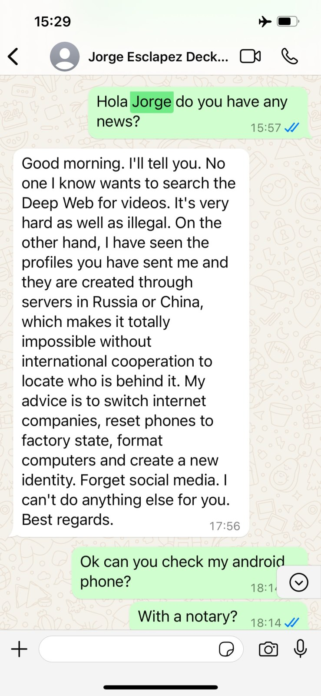
Chat with Jorge Wednesday 13th¶
Chat with Jorge 13th March
[13/03/2024, 19:40:50] Jorge Esclapez Deckcard23: ‎Messages and calls are end-to-end encrypted. No one outside of this chat, not even WhatsApp, can read or listen to them. [13/03/2024, 19:40:50] Niramisa Weiss: Hola Jorge soy Katharine [13/03/2024, 19:41:18] Niramisa Weiss: La irlandesa con los problems en Dénia [13/03/2024, 19:41:27] Jorge Esclapez Deckcard23: Hello [13/03/2024, 19:41:42] Jorge Esclapez Deckcard23: Nice to meet you [13/03/2024, 19:41:50] Niramisa Weiss: Likewise â˜ºï¸ [13/03/2024, 19:42:20] Niramisa Weiss: So I have a very sensitive request which can be quite triggering [13/03/2024, 19:42:29] Niramisa Weiss: Maybe upsetting [13/03/2024, 19:42:55] Niramisa Weiss: Should i continue? [13/03/2024, 19:43:15] Jorge Esclapez Deckcard23: Yes. How can i help you? [13/03/2024, 19:43:35] Niramisa Weiss: Ok so when I was a child i was drugged and abused and it was filmed [13/03/2024, 19:43:45] Niramisa Weiss: It’s a long time ago 1989 [13/03/2024, 19:44:19] Jorge Esclapez Deckcard23: 😳 omg [13/03/2024, 19:44:23] Niramisa Weiss: I have been to the police and they arrested someone , about 8 years ago, they had a lot of evidence but they did not charge in the end [13/03/2024, 19:44:32] Niramisa Weiss: You know how it is [13/03/2024, 19:44:49] Jorge Esclapez Deckcard23: Ok. I understand. [13/03/2024, 19:45:20] Niramisa Weiss: Yes so I believe these videos are online somewhere [13/03/2024, 19:45:31] Niramisa Weiss: And they would be proof [13/03/2024, 19:45:52] Niramisa Weiss: Maybe if you knew someone who could help [13/03/2024, 19:46:10] Jorge Esclapez Deckcard23: Do you think that this person could be spy you? [13/03/2024, 19:46:15] Niramisa Weiss: No [13/03/2024, 19:46:45] Niramisa Weiss: But last year I was targeted by a man who I had turned down romantically in Dénia 10 years ago [13/03/2024, 19:46:54] Jorge Esclapez Deckcard23: Ok. That kind of videos are in the dark web. [13/03/2024, 19:47:01] Niramisa Weiss: A piano teacher at the conservatory [13/03/2024, 19:47:41] Niramisa Weiss: I used to live here and left for 8 years . I came back 2 years ago and started my studies again [13/03/2024, 19:48:03] Jorge Esclapez Deckcard23: It’s difficult find someone to search that kind of videos. [13/03/2024, 19:48:14] Niramisa Weiss: But he was not happy about this and caused me a lot of problems, including hacking my laptop and phone through the router [13/03/2024, 19:48:33] Niramisa Weiss: They took very private videos and recordings of me [13/03/2024, 19:48:48] Niramisa Weiss: And sent the around the town here in Dénia [13/03/2024, 19:48:58] Niramisa Weiss: I would like those too if possible [13/03/2024, 19:49:22] Niramisa Weiss: Literally everyone knows what is going on and no one helps me [13/03/2024, 19:49:40] Niramisa Weiss: I complained to the generalitat and they ignored me [13/03/2024, 19:49:49] Jorge Esclapez Deckcard23: Ok. Then you need found the videos. [13/03/2024, 19:49:56] Niramisa Weiss: I’m threatened on twitter and the police aren’t interested [13/03/2024, 19:50:23] Jorge Esclapez Deckcard23: Sure. [13/03/2024, 19:50:54] Niramisa Weiss: I see messages on twitter about my bank balance, payments I have made, they even sent me a picture I took of myself that they stole … a bit AI but me for sure [13/03/2024, 19:51:03] Niramisa Weiss: It’s overwhelming [13/03/2024, 19:51:28] Niramisa Weiss: They have access to this phone [13/03/2024, 19:51:35] Niramisa Weiss: It’s a nightmare [13/03/2024, 19:52:13] Jorge Esclapez Deckcard23: And what is the police answer? [13/03/2024, 19:52:19] Niramisa Weiss: There’s probably about 50 minimum accounts tracking me on twitter [13/03/2024, 19:52:39] Niramisa Weiss: Police sent me away, no crime, but they didn’t want to help me at all [13/03/2024, 19:53:03] Niramisa Weiss: I’m worried about my family being robbed [13/03/2024, 19:53:18] Niramisa Weiss: Phished now because they have so much information [13/03/2024, 19:53:51] Jorge Esclapez Deckcard23: Well. Then the solution is discover who is the person behind the Twitter profiles? [13/03/2024, 19:54:05] Niramisa Weiss: The people at the conservatory know private things about me that I only ever told google [13/03/2024, 19:54:26] Niramisa Weiss: Can you do that? [13/03/2024, 19:54:40] Niramisa Weiss: I know who it is [13/03/2024, 19:54:47] Niramisa Weiss: Ring leader at least [13/03/2024, 19:55:56] Jorge Esclapez Deckcard23: I can try Discovery using social engineer and investigation. [13/03/2024, 19:56:29] Jorge Esclapez Deckcard23: I dont understand that expresion.😅 [13/03/2024, 19:56:35] Niramisa Weiss: Thank you [13/03/2024, 19:56:43] Niramisa Weiss: Respect [13/03/2024, 19:58:24] Jorge Esclapez Deckcard23: Ok. If you send me any information i Will try found about that. [13/03/2024, 19:58:43] Niramisa Weiss: What do you need? [13/03/2024, 19:59:13] Niramisa Weiss: I have 2 twitter accounts they are manipulating [13/03/2024, 19:59:24] Jorge Esclapez Deckcard23: Any Twitter account for instance. [13/03/2024, 19:59:32] Jorge Esclapez Deckcard23: Perfect. [13/03/2024, 19:59:47] Niramisa Weiss: Ok I have 2 and I can send you details of the main suspect accounts [13/03/2024, 20:00:30] Jorge Esclapez Deckcard23: Great. I see that and after i will contact you again. [13/03/2024, 20:00:37] Niramisa Weiss: They seem to be a honey-trap type gang or gangs for estafa [13/03/2024, 20:01:05] Niramisa Weiss: How can I send without them knowing? [13/03/2024, 20:01:32] Niramisa Weiss: I can send in an hour or two [13/03/2024, 20:02:22] Jorge Esclapez Deckcard23: Take a screenshot. [13/03/2024, 20:02:45] Jorge Esclapez Deckcard23: When you want. No worries. [13/03/2024, 20:02:57] Niramisa Weiss: Ok [13/03/2024, 20:03:53] Niramisa Weiss: You can look at my accounts now 1FRGVN and jackchardwood [13/03/2024, 20:04:41] Niramisa Weiss: And even my work twitter they got hold of immediately I created it [13/03/2024, 20:05:03] Niramisa Weiss: Drmuffy [13/03/2024, 20:05:15] Niramisa Weiss: I have 2fa on all 3 [13/03/2024, 20:05:51] Jorge Esclapez Deckcard23: 👠[13/03/2024, 20:06:13] Jorge Esclapez Deckcard23: 😳 [13/03/2024, 20:06:18] Niramisa Weiss: Yes [13/03/2024, 20:06:31] Niramisa Weiss: But they have access to my machines directly so [13/03/2024, 20:06:45] Jorge Esclapez Deckcard23: You must have any kind of stalkerware in the pc. [13/03/2024, 20:07:00] Niramisa Weiss: If you look at highlights in 1frgvn you see the whole story [13/03/2024, 20:07:06] Jorge Esclapez Deckcard23: Or in the router. [13/03/2024, 20:07:24] Niramisa Weiss: It was the router, they told me it was Mac spoofing [13/03/2024, 20:07:35] Jorge Esclapez Deckcard23: Ok. I see It ASAP. [13/03/2024, 20:07:59] Niramisa Weiss: If you look at August last year this was the very interesting time [13/03/2024, 20:08:07] Jorge Esclapez Deckcard23: They? [13/03/2024, 20:08:17] Niramisa Weiss: Yes [13/03/2024, 20:08:30] Niramisa Weiss: It will be this guy and his family and friends [13/03/2024, 20:08:39] Niramisa Weiss: And they may be criminals [13/03/2024, 20:08:41] Jorge Esclapez Deckcard23: Ok. [13/03/2024, 20:09:18] Niramisa Weiss: In August last year I had very few followers and no one was looking at my tweets, just them [13/03/2024, 20:09:46] Niramisa Weiss: I could tell because they were translating them and I only ever log in on uk VPN [13/03/2024, 20:10:10] Niramisa Weiss: They terrorized me with threats so I went public and got 2000 followers overnight [13/03/2024, 20:10:31] Niramisa Weiss: At that point the stalking got really really bad for me here [13/03/2024, 20:10:43] Jorge Esclapez Deckcard23: Ok. A lot of information. I start with that and in a couple of days i Will contact to you again. [13/03/2024, 20:10:54] Niramisa Weiss: Ok I’ll send some screenshots in a bit [13/03/2024, 20:11:07] Jorge Esclapez Deckcard23: Great. [13/03/2024, 20:11:08] Niramisa Weiss: Thank you [13/03/2024, 20:11:23] Jorge Esclapez Deckcard23: ðŸ‘👋👋 [13/03/2024, 20:11:42] Niramisa Weiss: And if you know someone who might be able to trawl the dark web for me let me know [13/03/2024, 20:12:16] Niramisa Weiss: The hackers mentioned things related to those times so I wonder if they found something already because they’re obsessed with me [13/03/2024, 20:12:22] Jorge Esclapez Deckcard23: Of course. [13/03/2024, 20:12:38] Niramisa Weiss: Thank you. I appreciate this so much [13/03/2024, 20:12:57] Niramisa Weiss: Jctot19 is one of them [13/03/2024, 20:13:10] Niramisa Weiss: Also they manipulate google search [13/03/2024, 20:14:03] Niramisa Weiss: So if you search for “1frgvn x†or “jctot19 x†the results are manipulated to send me messages [13/03/2024, 20:14:19] Niramisa Weiss: That’s how they sent me the pic [13/03/2024, 20:14:38] Niramisa Weiss: Which I will forward but it’s in highlights actually in 1frgvn [13/03/2024, 20:14:51] Jorge Esclapez Deckcard23: Ok. I Will be that too. [13/03/2024, 20:14:59] Niramisa Weiss: 🙠[13/03/2024, 20:16:29] Niramisa Weiss: I’d really like to know how they do that btw [13/03/2024, 20:27:09] Niramisa Weiss: They are using a lot of AI images too of mixed faces of people I know [13/03/2024, 20:32:31] Jorge Esclapez Deckcard23: Ok, i m going to work . I contact to you in a few days and we continue the conversation. [13/03/2024, 20:32:46] Jorge Esclapez Deckcard23: Best regards. [13/03/2024, 20:53:07] Niramisa Weiss: Thank you [13/03/2024, 21:14:31] Niramisa Weiss: https://drive.google.com/file/d/1EturDPGMRS2Lsd_pGxKEeCNcF_Vc1XFm/view?usp=drivesdk [13/03/2024, 21:14:43] Niramisa Weiss: Folder in there with screenshots [13/03/2024, 21:14:51] Niramisa Weiss: Let me know if you need access end of chat
- I didn’t get back to finishing this conversation until the early hours of the following morning.
- It’s as if something interrupted the flow while I was walking and texting on my way back home from choir.
- Here is the whole WhatsApp chat with Jorge.
- It’s interesting how I mention the
@drmuffyaccount I was using for Polygon at the time. - I see the handle has been completely taken over now, the time of writing being 20th October 2025.
- I guess Polygon backend engineers must have done that when they fired me and shut down my system.
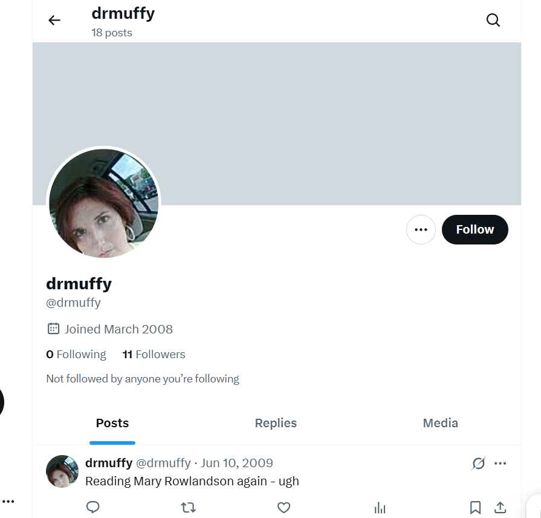
- Certainly you would have needed to be logged in on my account to make the change, and I didn’t have the chance to log out.
- Did they swap it for a fake account straight away?
- The chat goes on over a few days and then a month later.
- It is very very informative and corroborating when you check the times against the information.
- I lied, once, because I was beginning to have even more doubts about this man and I felt his manner had changed after I had given him certain pieces of information.
- The response I screenshot felt like my desperate need for help was being shut down.
- If I had followed his advice, I’d have been porn-mincemeat.
- In the end, I went elsewhere with some of my devices, but I kept the best stuff back because I didn’t trust anyone in the Comunidad Valenciana at that point.
- I still have them.
The woman at Knowhere¶
- In the afternoon, a woman comes in to work at Knowhere and sits diagonally across from me.
- She looks familiar.
- She tells me she’s an accountant and her name is Hazel.
- I ignore this. She is not Hazel Smith.
- Thinking back, I either saw her online in June and July 2023 when I was practicing Transforming Touch over Zoom with a Dutch lady. They looked similar for sure.
- Or/and, I saw her in some of the porn they flashed up at me on Google search. The older woman I saw in a porn posture (a private nude maybe) was very similar looking and was on my search results for months.
- Or/and, she was the woman getting her photo taken after getting married.
Choir¶
- I turn up to choir class that evening, as normal.
- The feeling at the conservatory is colder and frostier than it has ever been.
- I can nearly see the hatred towards me dripping off teachers and staff, and some students too.
- Teachers and staff are furious with me for showing up this evening after their second failed crucifixion which must have taken enormous resources and efforts to organize.
- Adriana, the Romanian girl, Domingo’s student, has been told something about me and she is confused about it.
- It’s as if someone wants me to know she’s a porn-gang target.
- I’m extremely concerned about the safety of Adriana, and have been since at least 12th June 2023. She’s beautiful and looks older than 14.
- As with all the other children these people have control over, literally no-one cares about their safety and wellbeing. It’s horrifying.
- In class, my security cam alarm goes off on my phone again, just like the night before at the concert.
- I check it.
- I can hear, recorded on my security camera alarm, a group of adult men making ghost noises; “woooo-woooo”.
- I laugh.
- It’s ridiculous.
- They are demonstrating total access to my network, and I still have the recording.
- I tweet a message to the Spanish police at this moment, because I know they’ll read it and it’s all I can do to defend myself against these continuous assaults.
- A little bit later, I text a message to Chris BJ saying something like: I think all this aggression is probably training for my political career.
- (This is a curious thing for me to have said given the trajectory of the next few months.)
- Moments later, the WhatsApps of both the choir teacher, Salva, and the woman who always sits beside me (dumpy French horn player called Vicen, I believe) audibly go off.
- They get their phones out and read the message at the same time.
- They look at me angrily.
- Vicen sneers.
- They are demonstrating to me how everything private I do in my life is monitored and disseminated in seconds.
- It means the lengthy texts I send to Jorge during choir and beyond are also being read in real-time.
- We sing the horrible domestic violence song again which is obviously a celebration of (sexual) violence against women and girls, and how the whole community comes out for that.
- As I leave the building, Ana is playing trumpet music on her laptop; I hear it playing softly in her classroom as I walk by.
- I’m texting with Jorge while walking as I leave to go home.
- As I approach the tunnel, a longer-haired blond and stocky man of about 45 swaggers towards me grinning.
- He looks like a seventies DJ.
- He walks right up to me and blows in my face.

- I’d remember him in an instant.
- Everyone will know who the seventies DJ is.
Distraction, then drugging¶
- It is my view, the blowing in the face routine is a distraction technique used by criminals to drug people, and I was drugged immediately by another man coming in from the side or behind me, probably with a dissolving patch on any visible skin or perhaps powder in my ear.
- Was I frog-marched back home, like the other drugged lady I used to see regularly?
- I don’t remember anything more about the evening until much later when I wake up in my bed in a state of terror.
The Pillow Game¶
- They walked me home sedated; Gloria’s brother who blew in my face, probably Gloria and her other brother the pimp/pornographer/trumpet teacher Bruno, Maria Hontanilla (she can tell us who else but probably Paqui), and a couple of the men.
- They held my face and top half down under the duvet and pillows, cutting off my air supply.
- My bottom half was free and my legs were going up and down trying to free myself from them.
- Someone told me about this on X with an AI cat who’s bottom legs were going wild while it’s top half was completely still and someone says: look at him on his little bicycle.
- I hear Maria Hontanilla say: leave her, she’s had enough now.
- They stop applying the weight to my face and chest.
- I gasp extremely loudly taking the air in.
- I wake up once they’ve left my apartment and I’m convinced I’m going to be murdered.
- This is how they get me to finally leave my studies at the conservatory.
Brain damage from lack of oxygen¶
- Most of my brain-damage symptoms that include confusion, lack of coordination, and my inability to play chess started right after this event.
- I believe the stroke symptom gained by poisoning over long periods, and used for the switcheroo porn, is separate to these symptoms.
State of terror¶
- The next thing I remember is being conscious of something evil in my vicinity, to the point of being concerned that I might be murdered and they would make it look like suicide.
- I’m certain I’m in danger, and that it is related to whatever happened to Lorraine Blackbourn.
- I no longer believe that Lorraine Blackbourn committed suicide.
- I text Christine BJ, Alessandra, Brenda, and Sarah Lebanon to document further that I would never commit suicide and if I turn up dead it’s murder.
- None of them reply to these texts in a normal way, if they reply at all.
- I tell them that I think whatever happened to Lorraine is happening to me.
- Online stalker activity is relentless, and I’m not posting much at all.
- One of the fake accounts posts something like: “leave her, she’s had enough now”, and I feel an enormous upset, like a punch in the stomach.
- For some reason, I thought Maria the piano teacher posted this statement.
- It sounded like her voice; I know this doesn’t make sense.
- I believe this statement is audible in one of the sedated-child gang-rape porn films made in 1989 which was likely quite violent.
- Did something similar happen to me that night while I was sedated in my apartment?
- Who was there? Did anyone see them coming in with me?
- I wonder what the special was on Dénia TV that night.
- My shoulders, arms, and hands feel numb, like they’ve stopped working.
- Even pressing touchscreen buttons on my phone is challenging.
After calming a little¶
- A few days later, and marginally calmer, and after considering my horrific experiences at the conservatory in wider terms, I ask for opinions on the elevated rate of suicide in the town and what’s behind the unusual deaths of healthy young people, and whether that’s what they were hoping for me.
- I have assumed since Summer 2023 that using polls to gauge sentiment is a safe way for terrified people to tell me what they think.
- I make a healer’s assessment of the situation.
- What do I mean? See my reply for an idea.
- I’m wondering if there’s a bet on. Of course there must be, but what I don’t realize is it’s probably an online international porn-network bet.
- I ask the town how they put up with it.
Did they rob my crypto account?¶
- I try to access my Coinbase crypto account around 2am.
- I’m locked out.
- I don’t know if criminals have stolen 60K from me or not.
- Could they have done this while they were in my apartment with me without my conscious awareness?
- I’m really concerned about this and send a tweet to Coinbase as I’m unable to contact them through the app.
- Even with all this going on, I tweet an “up yours” to Dénia criminals.
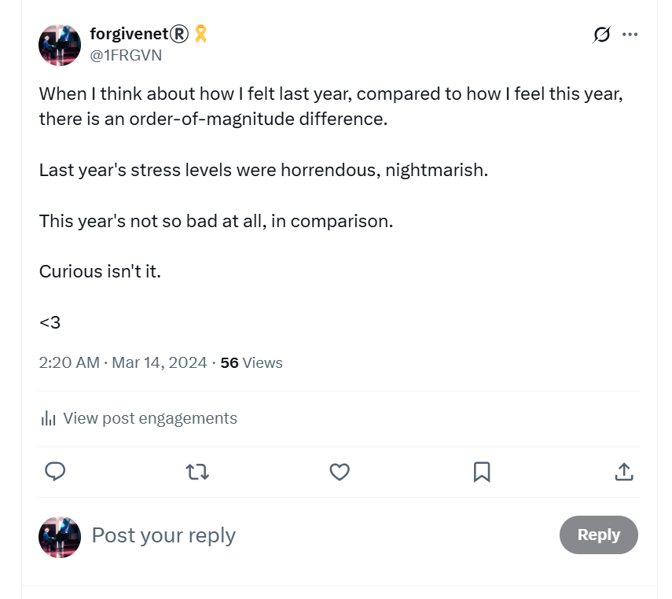
- There is a sense of having become so accustomed to the daily terrorizing, I’m able to withstand it, collect myself, and continue on into battle.
- I want them to know I will be going to the conservatory to practice the piano in the morning.
- I also include the police in a tweet about it.
Thursday 14th March¶
Chat with Jorge Thurs 14th¶
- I finish texting Jorge.
- Something had interrupted me while I was texting him on my way home from choir the night before.
- I hadn’t got around to sending him the pic I had promised on Wednesday 13th at 20:14.
- I also tell him I think I’ve been robbed.
WhatsApp with Jorge 14th March
[14/03/2024, 03:48:29] Niramisa Weiss: ..attached: 00000114-PHOTO-2024-03-14-03-48-29.jpg [14/03/2024, 03:48:48] Niramisa Weiss: That’s my bottom half the top is AI [14/03/2024, 03:48:55] Niramisa Weiss: There are lots of these [14/03/2024, 03:49:04] Niramisa Weiss: I will pay you of course [14/03/2024, 03:51:54] Niramisa Weiss: They may have accessed my Coinbase account. I’m blocked and I cannot contact Coinbase so I don’t know if they’ve robbed me or not [14/03/2024, 12:36:20] Niramisa Weiss: Looks like they robbed me 60k euros
Chest infection¶
- At choir the night before, I was getting a cold.
- The following morning, it worsens and I lose my voice.
- The cold deteriorates into a chest infection and constant coughing fits.
- This is to do with a bunch of the teachers, and Gloria’s brothers, trying to murder me by smothering with the pillows.
- I’m extremely unwell for the next few weeks and I can hardly talk.
- Eventually, in India in the first week of April, three weeks later, I’m prescribed hardcore antibiotics for pneumonia and medicine for pleurisy by the hotel doctor.
- I call the hotel doctor after I snap the same weak rib I snapped in yoga from coughing so hard.
- Notifications on fake X accounts mention the coughing in a jeering manner, sometimes right after a fit.
- It seems they are listening to everything I do and making a lot of effort to upset me.
- The medication works and I recover in India.
- My lungs have always been a trauma weak point.
- Whatever happened to me on the night of Wednesday 13th March shocked my whole system and I believe was likely connected to my respiratory function.
- People in the town know what happened to me at the hands of the porn-gangs, and they delighted in it.
The hallucinogen dose ramps up¶
- The following morning I wake and go about my business as usual.
- I make coffee and drink water.
- I skip breakfast.
- I head into town with my laptop and piano books.
- Something starts to cause me extreme anxiety.
- Is it visceral memories of what happened the night before?
- I seemed to be OK when I woke up and was getting ready in my apartment.
- The new information I have about Lorraine Blackbourn is on my mind.
- Did they tell me or show me something while they were in my apartment without my conscious awareness?
- I have an errand to run before I start work.
- As I walk through the tunnel, and along the streets of the old town, people give me dirty looks, some stand staring with their mouths open, women mumble underhand comments as I walk by them.
- A van drives towards me screeching its wheels.
- VIDAL is written in giant letters on the front bonnet, which makes me smile but is actually very threatening.

- Later, I will bump my head badly on my car boot door.
- I’m walking into things.
- My shoulders, arms, and hands feel numb.
- I’m wobbly on my feet.
- I feel terrorized by everyone and no-one.
- Its horrendous.
- Am I ingesting strong anxiety-forming substances through my water now; like a stronger hallucinogen than normal, something on top of the daily mandrake dose which is exacerbating the reasonable anxiety I have?
Practicing the piano¶
- I leave the Knowhere offices to practice the piano at the conservatory.
- I’m extremely anxious and I feel really uneasy in the piano room, as if I’m being watched.
- I can’t play; my arms, hands, and fingers are not working properly.
- I call the British embassy from the piano room asking for help.
- They tell me they can’t do anything for me and suggest I go to the police.
- I explain what happened with the police in February.
- They don’t seem to care.
- I start thinking about going to the police in Madrid.
- I leave the conservatory.
- Gloria is walking towards me.

- She’s laughing at me.
- She says; Finally, you’re leaving now.
- I don’t understand what would make her say that and be so sure of it.
Devastated parents¶
- Returning to work, I decide to take a detour to the Carmelite church on the Carrer Loreto to light a candle for myself.
- I need one.

- A middle-aged couple is praying together at the front of the church; they are crying softly.
- They carry a picture of a young girl; a daughter they lost to the porn-gangs.

- I wonder if she was a musician, or a dancer.
- I hum the Salve from the back.
Threatening men at Knowhere¶
- At the Knowhere offices I ask the French manager to borrow a paper shredder.
- He finds one for me.
- I’m so worried about being robbed, I have brought stacks of my personal financial paperwork into the office from home to destroy.
- I believe the honey-trappers want all my money.
- I still have no idea what has happened to the 60K in my Coinbase account.
- After lunch, and my failed attempt to practice the piano at the conservatory, I return to the Knowhere offices to work.
- I’m sitting there quietly.
- A group of very rough-looking Russian or Ukrainian men come in and stand at the opposite desk to me.

- They are pretending to talk about the computer.
- It is a totally incongruous scene.
- Men like these do not come into serviced co-working spaces to randomly discuss computers.
- They are dressed like labourers.
- They are extremely rough types, four or five of them.
- Each of them glances at me from time to time.
- I find it extraordinarily threatening.
- I decide to leave Dénia immediately and I book a hotel in Madrid.
Leaving the Knowhere offices¶
- When I’m ready to leave the offices about two hours later, the same group is right outside the door at the exact the moment I step outside.
- They are walking by in formation.
- They surround a blond woman I’ve seen before in Dénia who is walking in step with them.

- They have timed this precisely; someone directing them knows my exact location by either my phone or from a conspirator in the office who has been waiting for me to leave, or both probably.
- The woman looks like a nurse who used to sing in Klara Sarkadi’s choir back in 2013 just before I met Mercedes there and she suggested I study the piano at the conservatory.
Asking for the CCTV of the men¶
- Later, sometime in April I believe (I will confirm with supporting documentation in due course), I text and email the manager of Knowhere and ask him to save the CCTV of both these events.
- I tell him I’m being terrorized by people in the town.
- He doesn’t believe I am who I say I am, and he blocks me on WhatsApp.
- I email instead.
- I give him the exact times and location of these men inside and outside the office.
- I gift the remaining days I paid for to an old and very dear friend who I noticed was in the pictures on the walls of people who regularly use the offices.
Spider-man¶
- At home, I organize my belongings and pack for an extended stay away.
- It’s hard to think straight about anything and my arms and shoulders hurt.
- I have wet laundry that needs drying.
- I take it to the La Colada laundry five minutes walk away.
- As I’m heading back to my apartment with my dry laundry, a sickly-looking man dressed as spider-man is limping towards me.
- His limp is sort of a mock act where he drags one leg behind him.
- The costume is baggy; it is way too big for him.
- He passes me at the gate to my apartment building.
- He looks at me.
- I recognize him, but I don’t know from where.

- He looked a little bit like the man who bared his teeth at me in Samui, but a lot more like the man I saw at the Chinese superstore with the toddlers dressed up as porn stars.
Madrid¶
- In fear, I leave Dénia and drive to Madrid.
- I’m horribly anxious; I feel wobbly on my feet, and my arms and hands ache and don’t seem to work properly.
- I slam the boot door down hard onto my own head by accident.
- I wonder if Gloria and the others expected me to crash the car. It’s a 450km drive to Madrid.
- I stay from 14th-24th March at the AC Hotel Atocha by Marriott.
- It’s close to where I have a friend; the only person I know in Spain who might be able to help me.
- My hotel costs run into the thousands but I have no choice.
- As I’m driving out of town, the blond woman I saw with the brutes outside Knowhere limps across the road in front of me in exactly the same way spider-man did a short while before, dragging a leg behind her in a mocking manner.

- Threats continue online. It took a few days for me to collect myself enough to start screen-shotting these.
- This one hints at conservatory music (Norma) and may be alluding to whatever happened to me after the man blew in my face with laryngospasm is nasty.
- You can see at the top of the screenshot above a function of the cyber-stalking I wasn’t clear about at the time. This is that the stalker accounts like my posts and that’s how they are able to send messages to me as I go through who has liked something I have said and read the profile messages.
- This one feels like a direct threat.
- After checking into my hotel in Madrid, I walk to a telecom shop called Movixoz close by.
- A smart man in a suit and tie comes in right behind me and stands with me at the counter.
- I buy a new Android phone and a small analogue phone for emergencies.
- The shopkeeper wants to know if I want to buy a wallet for the phone. He’s using a word I never heard before so I don’t understand.
- The man standing beside me looks at me unsmiling and says, cage, an English word, in a suggestive tone.
- It’s not the right word in Spanish or in English.
- I find this event extremely threatening given I have been a caged animal for years in Dénia.
- The whole time I’m in Madrid, I feel like I am being followed.
- Back at the hotel, I set up the new Android and reformat both my personal Mac and iPhone to factory settings.
- Once I’m logged in to my accounts, however, it’s obvious to me I’m still being cyber-stalked to the same extent as before.
- I wonder if the Chinese telecommunications shops all over Spain are implicated in the cyber-stalking epidemic, and to what extent?
- I remember how obvious it was the shopkeeper in the telecommunications shop in the Calle Diana knew who I was, and not in a good way.
- Did my new Android phone come hardware-hacked off the shelf?
- Are Spain’s online networks run entirely by porn-sick men supported by Chinese telecommunication shop specialists?
- Is the end goal like trans ideology elsewhere; weaken a country’s populace with sexual perversion?
Contacting my friend Inma¶
- I contact an old friend who lives in Madrid, Inma.
- We’ve known each other for many years.
- We attended a trauma healing workshop together in 2005 in Barcelona run by an ex-manager of the Grateful Dead, Sat Santokh, and we mostly stayed in touch, although I had no contact with her while I was suicidally depressed over the years 2015-2022.
- I tell her everything I know, in the way I understand it at that time.
- I tell her that I’m experiencing the same hostile cyber-stalking flying-monkey attacks that she told me her sister was experiencing when we met for dinner in December 2022.
- I tell her about what teachers and staff at the conservatory have done also.
- She is the same friend I met at Christmas 2022 and at Christmas 2023, so she knows something about what’s going on already.
- I’m coughing constantly; I can hardly speak.
- Things we chat about whenever we meet are repeated on fake X account profiles later on in the day.
- This happens every time I visit my friend in Madrid.
- She suggests we go to the gender-violence police department the following morning.
Writing to my parents¶
- That night, I write a letter by hand to my parents.
- Pen and paper is the only way I can communicate securely, although I’m not confident the envelope will not be intercepted within Spain.
- Reigniting communication with my family is, sadly, the very last thing I want to do but I feel I have no choice anymore. I even mention why this is the case in the letter.
- Nevertheless, I have to explain what’s happening to them in case I’m murdered or something horrible happens to me.
- I have also become concerned that Dénia hackers have been trying to get personal information about my family in order to rob them too.
- Little did I know my whole family had all been targeted by North London criminal gangs with Spanish connections from the moment we received the Lockerbie compensation, if not before.
- I date the handwritten letter the following day and the next morning I send it by registered mail to London from the post office near to my hotel.
- This is the first contact I have had with my family for nearly 3 years.
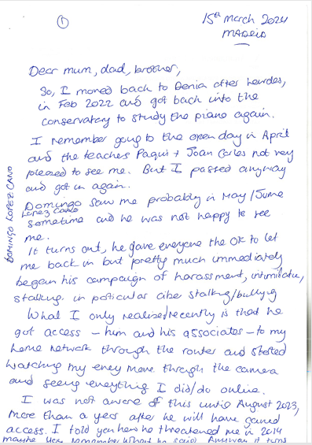
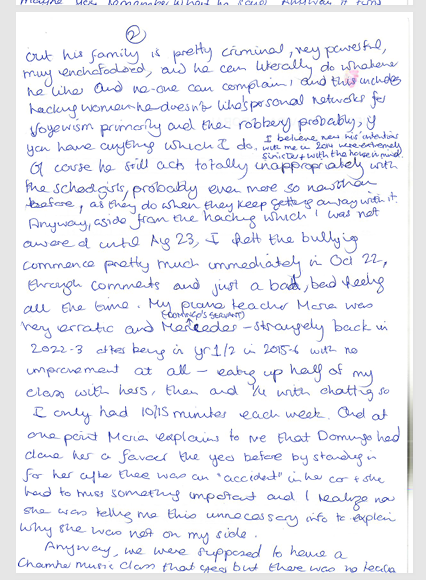
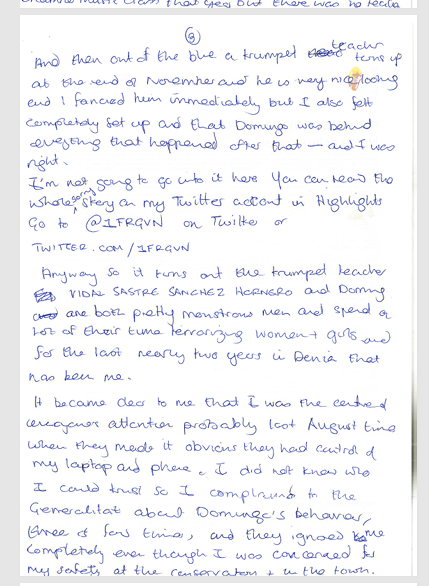
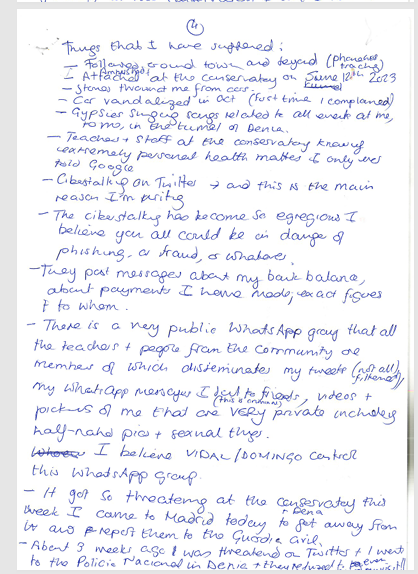
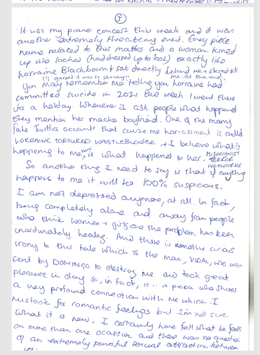
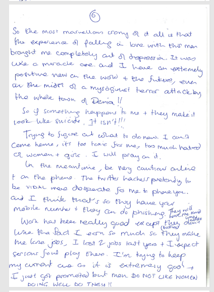
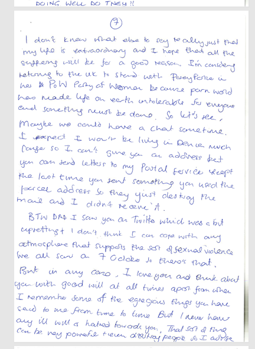
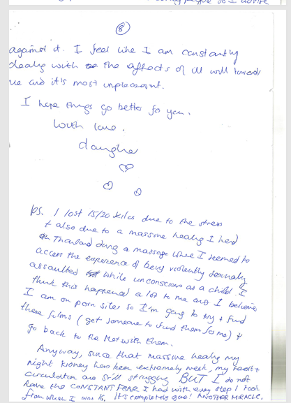
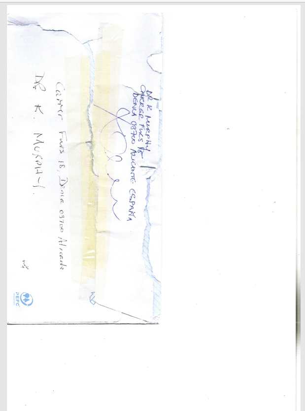
- I explain I’m being terrorized and by whom.
- I try to keep my letter as calm as possible because my parents are elderly, and I don’t know how things are with them.
- I don’t want to upset them too much, but I’m very scared and someone needs to know what’s going on in case something happens to me.
- I tell them I believe that Domingo and his family are planning to murder me.
- I explain that I am no longer depressed, and why, and that I would NOT commit suicide.
- I remind them of what Domingo told me all those years ago, the threat of poisoning, something that I had told them and some friends at the time as it was so frightful.
- As I read this letter back today, I find that in the middle of this hell-on-earth there is something very loving and kind around and within me that I am expressing with my words.
- It’s really obvious from this letter I had no idea to what extent I had been drugged and poisoned, and for how long.
- And I have no inkling there could have been more than one trumpet teacher either.
15th March¶
Reporting the crimes to the police in Madrid¶
- With the help of my friend Inma, I report the crimes to the police in Madrid.
- When I meet her in the morning, she tells me about some unusual online events at her home.
- Every time I see or speak to her until I travel back to the UK in January 2025, she reports strange events online in her home; random words popping up on her screen, the TV turning itself off and on, other things I have forgotten.
- I’m not surprised.
- We walk to the gender-violence office of the Policia Nacional in Madrid at C. de las Huertas, 76-78, Centro, 28014 Madrid, Spain.
- After waiting a short while we are ushered into a reporting booth where a female police officer is taking notes as I detail what has been happening.
- My lack of Spanish is a barrier but Inma is helping me as much as possible.
- It all seems to be going well, although I am extremely stressed and I am finding it very difficult to think straight.
-
The report is supposed to detail the crimes I am reporting, but it ends up being just a simple sketch of what I tell her, with mix ups.
-
I explain the following:
- How it all began in 2014 with Domingo’s unwanted attention.
- The officer neglects to mention the threat of poisoning I told her about.
- How Domingo’s sexualized attitude to the little girls was extremely concerning.
- How a man calling himself Vidal SASTRE SANCHEZ HORNERO turned up in the role of trumpet teacher in November 2022.
- The officer has skimmed through everything I said about the cyber-stalking on page two of the report, and she has mixed stories up and consequently makes a lot of errors.
- She also neglected to add specific dates which I did supply, such as 12th June 2023 for the conservatory funeral.
- She correctly recounts some of the abuses I experienced in the street, such as stones thrown at me from a car; a lot of the other stuff, like the gang rape replays for example, I didn’t understand the reasoning behind, but I did explain these to her as threatening events.
- She does not detail them.
- She does recount my experience of a private photograph of me in my underwear being stolen by hackers and posted back to me.
- She adequately describes how I receive constant messages of private matters no-one should know about.
- She did not mention that teachers and staff at the conservatory would do the same thing in person, and I absolutely made sure to tell her this; specifically that Ana Girbes knew about a private health matter that I had only told Google.
- I detail the connection with Lorraine Blackbourn and my concerns she was also targeted and may be dead as a result. The officer neglects to add the information about Lorraine to the report.
-
When I read this back, I find the police notes do nothing to capture the intense horror I have been suffering for nearly two years.
- Now that I’m aware of so much more they were doing without my knowledge, I find this report even more horrifying. It’s a formal document that will assure well-connected criminals that they are safe to continue making money from me in spy-cam and sedated rape porn; that they are free to set up a honey-trap romance and drug me to render me incompetent, while they rob me and eventually do away with me like so many others.
- At the time, I’m not convinced the police are taking me seriously at all, or have any intention of investigating.
- As I start to show the police officer some of the screenshots I have, including the picture of me in my underwear, my friend notices the officer taking the decision to shut things down.
- Did she see a warning on her screen about something?
- Is there a wider investigation going on about foreign women reporting crimes in the Las Marinas area who eventually turn up dead or maimed?
- She tells us that before they will investigate I need to pay a cyber expert to examine my devices in order to prove I’ve been hacked.
- Then, and only then, will they investigate, the officer says.
- I’m astonished.
- At least we got the name down: Vidal SASTRE SANCHEZ HORNERO.
{kind=link}
{kind=link}
{kind=link}
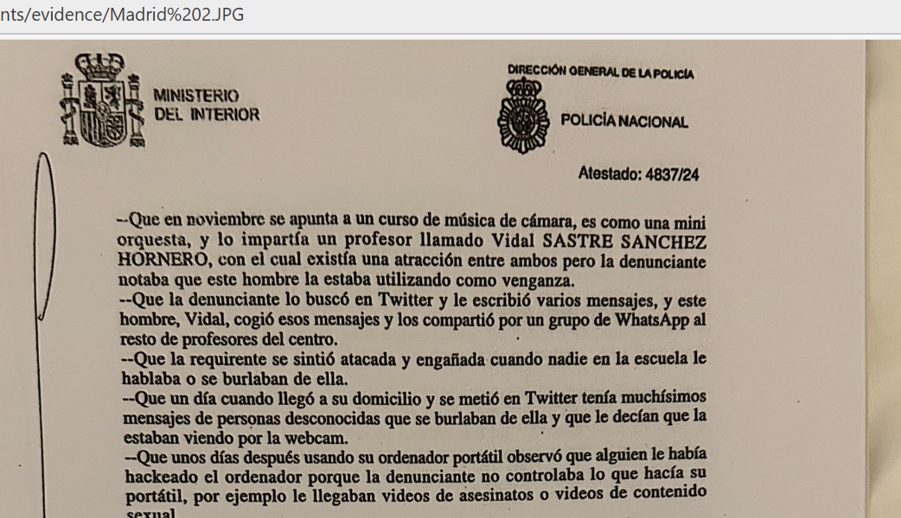
- We can only guess at why they didn’t have a cursory look at the L’Amistat band which this man apparently directed.
- They might have noticed a whole bunch of historical complaints.
- It makes me even more curious why the Spanish government official would insist this man was not in the Generalitat systems, on or around the same day he was picking up his government prize at the Palau de Arts in Valencia.
- Are women and girls in Spain born and raised to be porn-gang fodder?
Cyber expert¶
- Later that afternoon and over the next days, my friend and I do some research into getting my devices examined for hacking so that I can amplify my report to the police, and maybe then they’ll investigate.
- We find out that to have this done properly can cost thousands.
- We get a quote in Madrid for 4000 euros.
- I say no.
- Eventually we find an expert in Alicante who quotes us 600 euros to analyze a laptop, phone, and two webcams.
- I’m not happy about the location, but my friend speaks to David at the office and is impressed by his professional manner.
- Over the next week, my friend helps me write a letter to David Piñeiro, the technical expert at D.P.R., Arzobispo Loaces, 17, Local 1 - 2, 03003 Alicante.

- We include matters I forgot to mention or that were ignored by the Madrid police’s gender-violence department.
- My friend advises we do not include my suspicions about Lorraine Blackbourn as it is tangential to the hacking and device analysis.
- We take our time preparing the letter.
- I send the letter by registered mail on the 21st March.
Translation of my letter to the device analyst in Alicante
Dear Sirs:
Sincerely, David Piñeiro
Madrid, March 21, 2024
Following the telephone conversation I had with you today, I am attaching the Police Report I filed last Friday, March 15, 2024, in Madrid, detailing the facts I need to prove for a future expansion of the report.
To this end, I would like to expand on the information that the National Police did not include, and which I consider important:
- I forgot to indicate the X account (formerly Twitter) of one of the people involved in the harassment, Vidal Sastre Sánchez Hornero, which is: @jctot19.
- That they have access to all my personal, financial, and work information, knowing how much I earn, what I buy, how much I spend, who I have paid…
- That they have also hacked my work computer, which I have reported to the IT Security Department, and they have confirmed the hack. For this reason, I have to travel to a co-working office near my place of residence in order to work, with the added danger of the constant threats I face on my commute to and from home, which I also mention in the aforementioned police report.
- They have attempted to access the “Cryptocurrency” account I maintain with the company “Coinbase,” blocking it (possibly due to its security controls), and which I have not yet been able to access. Therefore, to this day, I do not know if they have managed to steal a significant amount of money from me. I am still trying to re-identify myself to gain access to it.
- That the two people I mention in the Police Report, both civil servants in the Public Administration, have created a WhatsApp group with many members, including teachers from the aforementioned Music Conservatory, as well as residents of the town of Dénia, sharing in said group my original Twitter messages and other false and offensive messages attributed to me, as well as my private WhatsApp messages, photos, recordings, and videos stolen from my devices. The proof of this is that many people in the town know private things that I have never told anyone.
- That I have written up to four times to the Department of Education of the Generalitat Valenciana, complaining about the attacks by the teachers I mention in the Report, and finally, when they dispatched an Education Inspector from Alicante, she addressed me in a threatening tone, suggesting that I was the cause of the problems.
- The digital security camera I connect to my apartment every time I leave the house has been hacked. I have received alerts from the app and threatening noises have been recorded on the data card, which I can also test. I have mentioned this to my company’s security team and they have recommended that I turn it off completely, as if they control it, they can easily access my home without being seen.
- In short, the entire hacking I’ve described—which likely began two years ago—as well as the daily threats I receive, have put me in grave danger, fearing for my physical safety, not only from the individuals I mention in the Complaint, but also from the other criminals who abound on the Levantine coast and around the world.
- Unfortunately, the National Police in Dénia, which I visited last February, ignored me, denying me the right to file a Complaint, which is why I had to travel to Madrid to do so. I mentioned this fact to the police officer who took my statement, but it has not been included in the Complaint I attach.
Dr. Katharine Murphy
Carrer dels Furs, 15, Block 1, Building 2, 3rd Floor, Door 17, 03700 Dénia
A second letter to my parents¶
- That night, I become frightened again.
- I’m convinced I’m going to be murdered.
- Online stalker activity is relentless.
- Do my exaggerated fears come from online manipulation or is the obvious lack of support from the police behind them?
- I realize that my letter of the day before to my parents probably didn’t have enough sense of urgency.
- I had been more concerned about their feelings over my own safety.
- I decide to write again.
- I write another letter by hand stating very clearly I believe I’m going to be murdered, perhaps disappear.
- I’m so concerned the intention is to rob me of my considerable wealth, I detail my finances.
- I list exactly how much money I have and where it is.
- I give detailed info of all my bank accounts, savings, and crypto accounts, and the amounts in them.
- I would NEVER do this if I wasn’t really really scared and certain something bad was going to happen to me.
- I also detail all my hacked devices.
- I add a memory stick with my Twitter archives from
@jackchardwoodand@1frgvn. - I post the handwritten letter in the same way as before - registered from the post office.
- In the envelope I enclose my hacked Android phone, the parking ticket from outside the police station in Dénia on 20th February, and some other documentary evidence.
- Unfortunately, or perhaps fortunately, my parents never received this letter and it was sent back to me by the postal service some time in April or May.
- Consequently, I have the sealed envelope to this day, and it doesn’t look like anyone tampered with it.
- The Android phone is still inside.
Chat with Jorge Friday 15th¶
WhatsApp with Jorge 15th March
[15/03/2024, 15:57:04] Niramisa Weiss: Hola Jorge do you have any news? [15/03/2024, 17:56:35] Jorge Esclapez Deckcard23: Good morning. I’ll tell you. No one I know wants to search the Deep Web for videos. It’s very hard as well as illegal. On the other hand, I have seen the profiles you have sent me and they are created through servers in Russia or China, which makes it totally impossible without international cooperation to locate who is behind it. My advice is to switch internet companies, reset phones to factory state, format computers and create a new identity. Forget social media. I can’t do anything else for you. Best regards. [15/03/2024, 18:14:32] Niramisa Weiss: Ok can you check my android phone? [15/03/2024, 18:14:40] Niramisa Weiss: With a notary? [15/03/2024, 18:31:33] Jorge Esclapez Deckcard23: I can scan the terminal for malware or spyware. I would use the Cellebrite tool that is used by police and other law enforcement. The analysis in the PREMIUM version that allows better results has a cost of EUR1,200. They used to have the standard version but the license has run out. I take him to a specialized forensic laboratory in Alicante with which I have a very good relationship. [15/03/2024, 18:32:53] Jorge Esclapez Deckcard23: As for the notary, it is only necessary if you want to keep what you find in case you later go to court to present it as evidence. If at first what you are interested in knowing is if someone is spying on you, you don’t need to. [15/03/2024, 18:36:07] Jorge Esclapez Deckcard23: Then there’s another, more artisanal system. It consists of performing a manual examination of the mobile terminal. To do this, you would have to change everything to another mobile phone as it is a very aggressive procedure and it is possible that the device will be damaged and become insensible. I do it myself and the cost would be 400 EUR. What I do is try to unlock the phone and get administrator permissions so that I can scan the entire terminal with malware tools and spyware detection. [15/03/2024, 18:38:30] Niramisa Weiss: The third option is ok but is it admissible evidence if you find something? [15/03/2024, 18:41:52] Jorge Esclapez Deckcard23: No. If you want a valid evidence you need a notary. [15/03/2024, 18:42:30] Jorge Esclapez Deckcard23: The third option is only if you want to know if your mobile have malware or stalkerware. [15/03/2024, 18:42:49] Niramisa Weiss: Ok [15/03/2024, 18:42:51] Niramisa Weiss: Gracias [15/03/2024, 20:58:35] Niramisa Weiss: Hola Jorge, I’m thinking of coming next Friday to do the android phone with a notary [15/03/2024, 21:37:21] Jorge Esclapez Deckcard23: You don’t need to bring a notary. We keep the withdrawal of the mobile phone as proof and deposit it with our trusted notary. We also give you a copy of the extraction along with the report. [15/03/2024, 21:37:38] Niramisa Weiss: Ok [15/03/2024, 21:37:55] Niramisa Weiss: How long does it take? [15/03/2024, 21:38:06] Niramisa Weiss: Can I come on Friday? [15/03/2024, 21:39:10] Jorge Esclapez Deckcard23: I’m going to see it and I’ll tell you something as soon as I have the date. Let’s see if it can be on March 22nd, next Friday. [15/03/2024, 21:43:42] Niramisa Weiss: This would be the best date
- By telling me to shut down all my social media, Jorge is, in fact, giving me advice which would have me a permanently drugged, hardcore-porn slave or worse, at my home in Carrer Furs, to the delight of many thousands of paying porn addicts worldwide, all in a matter of months.
- This is close to the actual trajectory of what did happen to me, criminals emboldened by my departure from the conservatory and apparent isolation.
- Did Jorge know what was really going on?
- Does every Spaniard working in tech know?
- It’s disgusting that I had to run around to find someone to help me prove what was really obvious to me already before Spanish police would even consider the case for hacking.
- It’s even more disgusting that this pre-requisite for the Spanish police costs 1000s of euros.
- I can only assume that many 1000s of women and children, all over Spain, are being hacked by Spanish porn-addict engineers, and no-one cares.
16th March¶
Chris BJ by gaslight¶
Or.. gaslit by Chris BJ¶
- Chris BJ gaslights me on WhatsApp by obviously and weirdly referring to a tweet I sent in the early morning after the piano concert spectacle that the English ladies had been required to attend in order to deny anything I might have said about it afterwards.
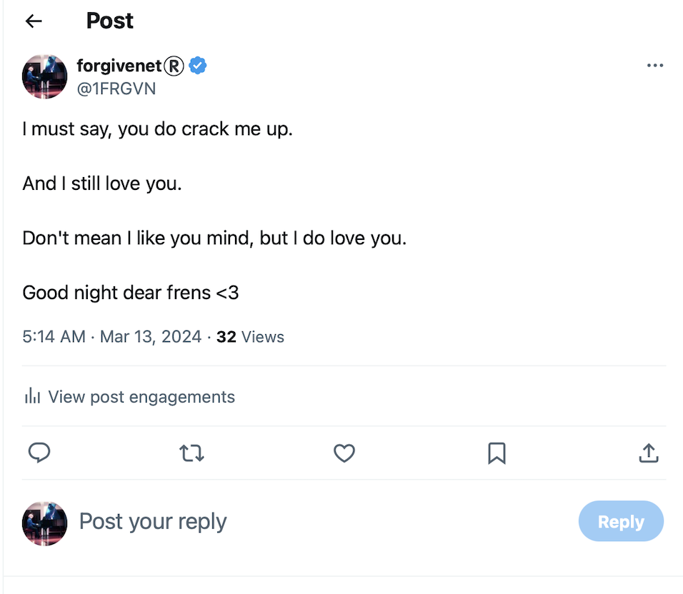
- Her WhatsApp states something like, Oh, by the way, we do like you.
- This message, and many more, are on my Android phone in the sealed envelope.
- When I ask her about it, she denies it.
- I wasn’t referring to the English ladies anyway; I had suspicions but no clear idea about their involvement until later.
- Whilst being perma-drugged, I was not clear about anything much.
- Was Chris BJ’s text a confession of some sort, or was she somehow trying to tell me I had support somehow?
- Throughout most of my communication with Chris BJ about the whole business, there was a high level of gaslighting.
- This is notable considering I shared with her all the electronic documentation I sent to the Generalitat, and other evidence too.
- Her tone was always dismissive and, given I knew she and Trish at least knew something evil was happening to me, as I found out in January 2023 when I got such a weird reaction to talking about the trumpet teacher and was consequently uninvited from walking, I never trusted her fully, but she was definitely useful.
- When I challenged her once again on the gaslighting, she claimed she was playing devil’s advocate, which I guess was an honest statement of some sort. I wonder who the devil requiring advocates was, for Chris BJ?
- I wonder if the English ladies were involved in the terrorizing on Twitter too; perhaps making, or being given, fake accounts for gang-stalking me, and others maybe.
- It would not surprise me at all. It seems the whole region has been involved.
- I wonder if they’re aware they were mobilized solely for the protection of pedophiles and rapists, and misogynist porn-gang fun incidentally.
- Are they conspiring because of the real risk of murder? Or because they enjoy it? It was never clear to me.
- If there is a real risk of murder, and many British people they know have disappeared or died in suspicious circumstances after standing up to local criminals, do they reluctantly submit to the porn-gangs in fear, then sort of go a little crazy and start to enjoy the nuggets of malevolent power they have been assigned?
17th March¶
Email to Paqui¶
- I email Paqui about the concert and subsequent events.
- I want her to clarify why I should feel fearful about going to the conservatory.
- I write to her under the assumption she is a normal, sane human being.
Email to Paqui translated
Dear Paqui, Sunday, March 17, 2024 at 4:22 AM Tuesday’s concert was truly brutal, as you know, even though I probably played better than ever until the very last bit. Wednesday’s choir class was even more horrendous. Then, on Thursday, I felt very afraid for my life in the city. My Twitter feed, which they manipulate, has been filled with violent images, knives, real-life murders, pornography, suggestions that I am in danger, along with constant harassment, very specific messages about my finances, and it has gotten much worse in the last few weeks, exactly the same way as last August just before I went public on Twitter because they suggested I was going to be arrested for something to do with my belief about “trans” children. It is very clear to me that I am hated by everyone, and this must be entirely because of the group. from WhatsApp that is spreading my Twitter messages… and also private messages, videos, recordings (which have been hacked) to the whole world. The question is, this hatred and the desire to destroy me only make sense if it’s pure brutality and sexism, and in reality, it doesn’t make sense when it comes from normal people, like you, for example. Therefore, I can only assume that they are also “editing” things to make it seem like I’m saying things to the public that I’m not saying, in fact, and have never said. I have never said anything that isn’t true, and Nor did I accuse anyone of anything. The fact that Ana G was so angry with me makes me assume that the words of another person or people have been attributed to me. If you want to read from the source, without the sexist filter, go to https://twitter.com/1frgvn and to the highlights. I put all the related tweets there. I truly regret hurting Ana R’s feelings as well, but it wasn’t over something trivial and immature. I’m fighting for my life here, and I’m one woman against countless faceless, psychopathic men. The fact that everyone knows extremely private health matters about me, which no one else in the world knows, is very worrying, don’t you think? You don’t think it’s just me, do you? I fear for the online safety of everyone at the conservatory, and the town, but especially the children. And after I leave, who will be next for their sport? So I think you’re hearing a lot of lies about me, and there’s a huge manipulation of my words taking place. That’s the only explanation. That’s what I believe has been happening since Vidal/Domingo developed the WhatsApp group last April, and the terror began for me. I would like to go back to studying, at least until the end of my fourth year, but the bullying in Salva’s class is triggering and I feel extremely unsafe there. I don’t care if you let me down. It’s still a privilege to have the opportunity to play piano and it’s all I’ve ever wanted to do. It seems the only way he could have left me alone to study piano was if I had a romantic relationship with an extremely rude, offensive, and sexist man more than 10 years ago! Do students at the Dénia Conservatory have to follow this or a similar rule? I know they want me to leave, and they’re surprised I didn’t leave last June. Now I’m afraid for my life, but it’s not so easy to leave quickly. I have a lot of work complications (I know they want me to lose my job again—it would be the third time in two years!—because I guess women aren’t allowed to be more successful than them), but I have a lot of trips booked and I also don’t have anywhere else to go. It is extremely difficult for me, and my health is suffering from this immense stress. I haven’t slept well and without anxiety in over a year. Even so, I love playing the piano. For me, it’s therapy. My only therapy. I love the conservatory too, and I love the vast majority of people there. I have been stalked and hacked online for almost two years with the sole purpose of shaming me, and now probably stealing from me or causing physical harm. It seems I lost almost €70,000 online last week. I filed a complaint in Madrid about the harassment because the police in Dénia refused to take one. However, it is very difficult to prove without access to the group chat, the private content, and the lies they have sent to everyone. I know everyone is horrified that I wrote the letters to the Generalitat, but what else could I do? Everyone is against me. I know they’re seeing all my tweets, and worse, so who exactly am I supposed to trust when no one talks to me? And every time I ask for help, and no one answers, and they get worse, I become more terrified. What would you do if this happened to you and you were a foreigner? It’s obvious I had no idea who to ask for help. They’ve put me in an impossible situation, one where nobody wins. All I want is to play the piano and study music. Nothing more. Nothing. I’m not a bad person, and what happened to me at the hands of these brutes is outrageous and unbelievable. Please, Paqui, let me know if I should go back to class after Easter and if I’ll be safe, or in danger, if I do. And if you think I shouldn’t go back, please explain why.
- She does not reply.
- Her silence speaks a thousand words.
- Over the next weeks, numerous fake accounts follow me or like my posts that have Paqui’s face in the profile picture in what I find to be a threatening pose.

- I find this extremely threatening, but believe that Hazel Smith and the Canos are more likely behind it.
- One of the accounts which had this photo of Paqui posted as a profile was this one, altered at the time of screenshotting:
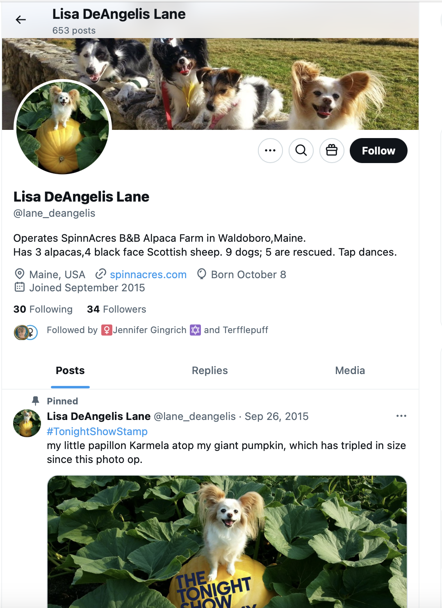
- My email also tips off criminals and colleagues that I won’t be leaving my apartment immediately; and that Bali is still on.
- Eventually, I realize I am indeed not safe at the conservatory, and likely at any Generalitat establishment, so I excuse myself from classes on 26th March stating that I am not going to be attending classes because I am afraid for my life.
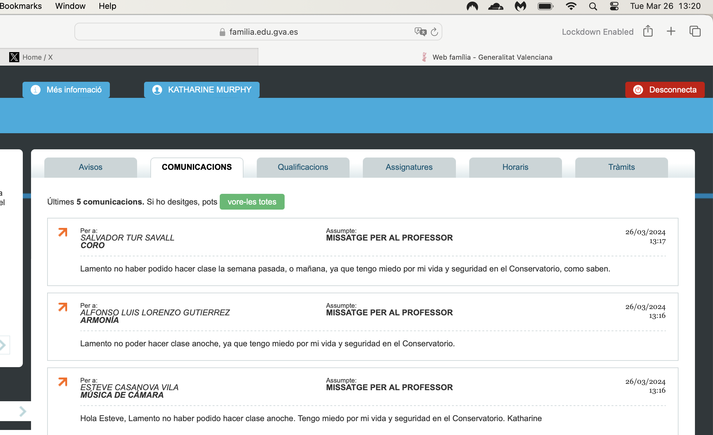
- Salva responds in a brusque manner stating that if I have a problem I should go to the police.
- Esteve responds to say he’s only at the conservatory to teach.
- Alfonso’s response is extremely alarmed.
- I do not trust the Generalitat systems, so a little later I tweet confirmation that I have done this.
18th March¶
I tell Gabriel Silva¶
- I meet Gabriel on one of our regular meet ups to discuss the Polygon docs for his particular product.
- I’m so stressed and anxious after the last week’s activities, and still convinced I’m going to be murdered, I tell Gabriel everything.
- It seems to me that whenever I tell someone what’s happening to me, it makes me a little bit safer.
- I tell him I’m being stalked and hacked by criminal gangs in the town I live in in Spain.
- I explain that the IT security department has found evidence of hacking on my home network and that is why I had to work away from home.
- I tell him I’m in a hotel because I’ve been terrorized so badly I’m afraid for my life at home.
- I don’t remember his response to this information.
- He never mentions it again.
Online stalking and threats over this period¶
Google search¶
- On a search with
@1frgvn x, I see an entry about urology which I never accessed. - This references the private health matter which I told no one about except Google, and I told Google about four months previously, or even earlier, nowhere near close to the date I saw this pic and screenshot it.
- I never read anything from this publication either; any sites I looked at were the Dr Mercola variety rather than research-based.
- For teachers and staff at the conservatory to have known about the private health matter affecting me, they would have to have been aware of the Google searches I made with regards to it the summer before, and/or been visually monitoring my activities in my private bathroom at home, or perhaps even in the toilets at the conservatory.

- It’s extremely important to remember that this private health matter that I have told no-one about to this day cleared up immediately I stopped being poisoned, and returns whenever they manage to get close to me again such as they did in July 2025.
B A Feldman¶
- The B.A. Feldman account pretends to be the trumpet teacher for a while, at least since October 2023 when the cyber-stalking ramped up exponentially.
- Trump (play on words with trumpet) often features in accounts I’m supposed to believe are the trumpet teacher’s.
- The account was right in there at the right moment, responding to posts referencing extreme harassment at the conservatory and elsewhere.
- The account even called out the situation as it was at the time; and still is to this day, albeit not to the same frenetic extent.
- Posts like this would make me wonder if it really was the trumpet teacher I loved, looking out for me.
- There was a lot of back-and-forth between us, many tweets now deleted.
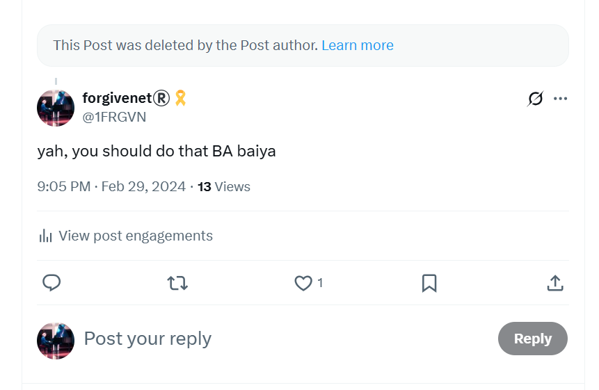
- Again, I believe this to be yet another multi-delegate account run by criminal gangs.
- Posts from this account would have that grainy effect I remember which meant me having to look closely at the screen.
- Grainy posts would pop up, then disappear.
- It’s possible the rape-gang porn from 1989 was flashed up by this account.
Lorraine Tortured Whistleblower¶
- Another fake account reminded me of Lorraine Blackbourn, I believe intentionally.
- Lorraine Blackbourn, if you remember, was my friend who hung herself in July 2021 in very unusual circumstances as this police statement has documented extensively.
- The account tag teamed with the
@Aniloviatoraccount and the@SeonaidDawnaccount which is extraordinary considering I ran in the general election with Seonaid just a few months later. - The account had been following me since January but the threat level ramped up in March.
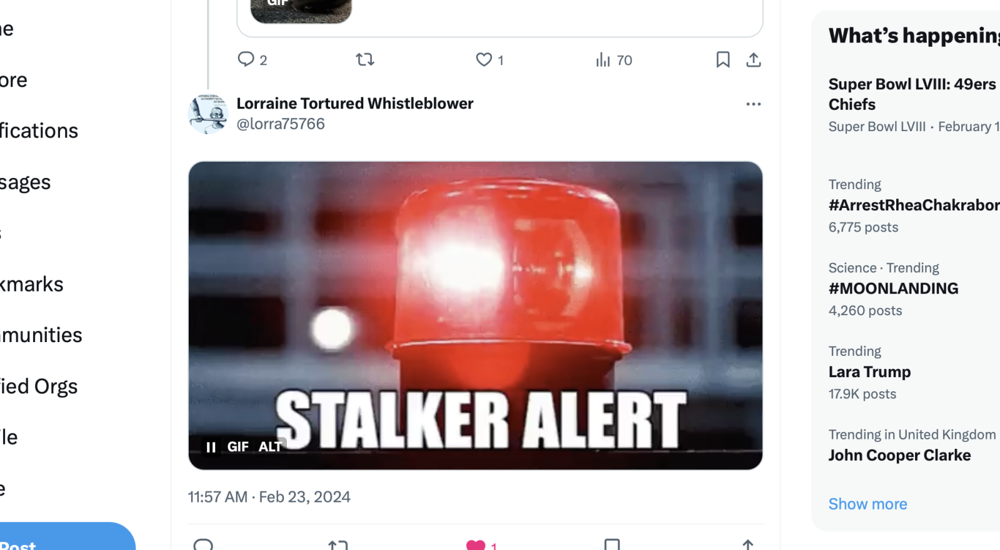
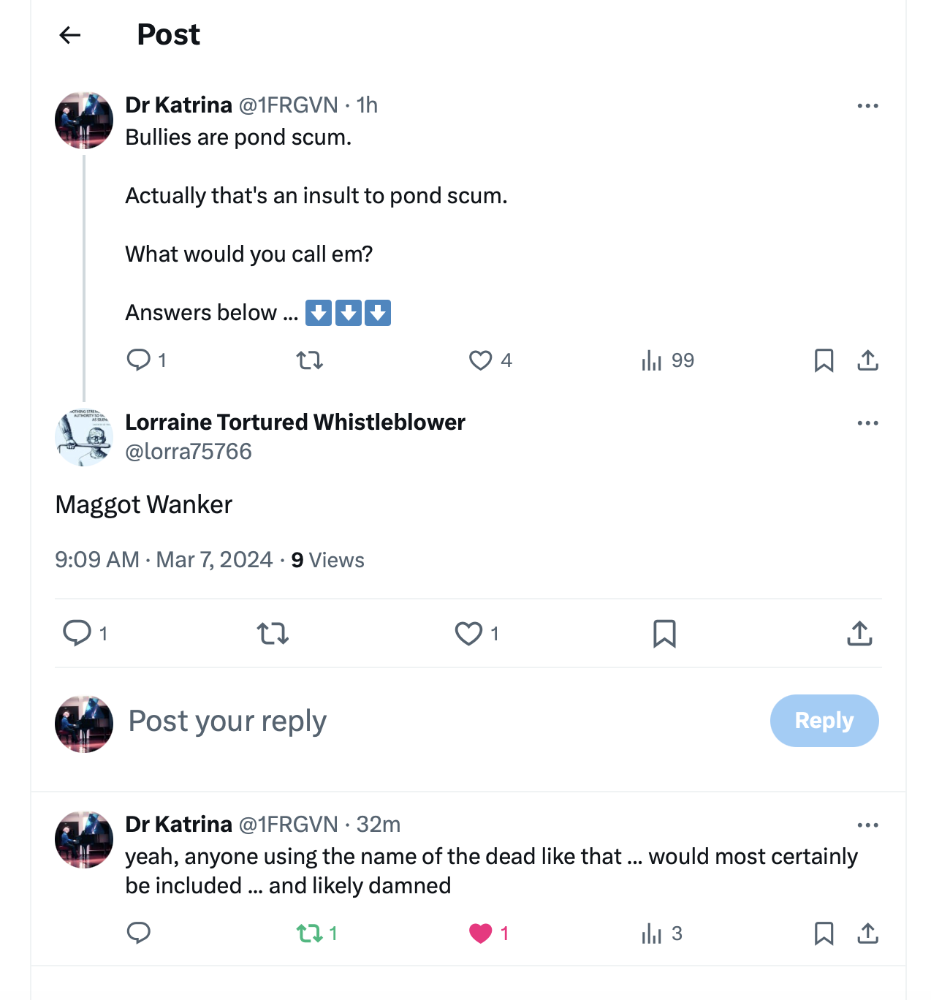
- I thought
@kiwipallywas also a stalker account as they were very active at this time, although it does seem that@kiwipally, and perhaps others, were on my side without my knowledge at the time. - Nevertheless, it would not surprise me if
@kiwipallywas run by an ex-pat from the Marina Alta region as a common feature of the stalking was a push-pull, now-friend-now-enemy activity. - The reply from
@kiwipallyis referring to me complaining about being stalked by this account on X.
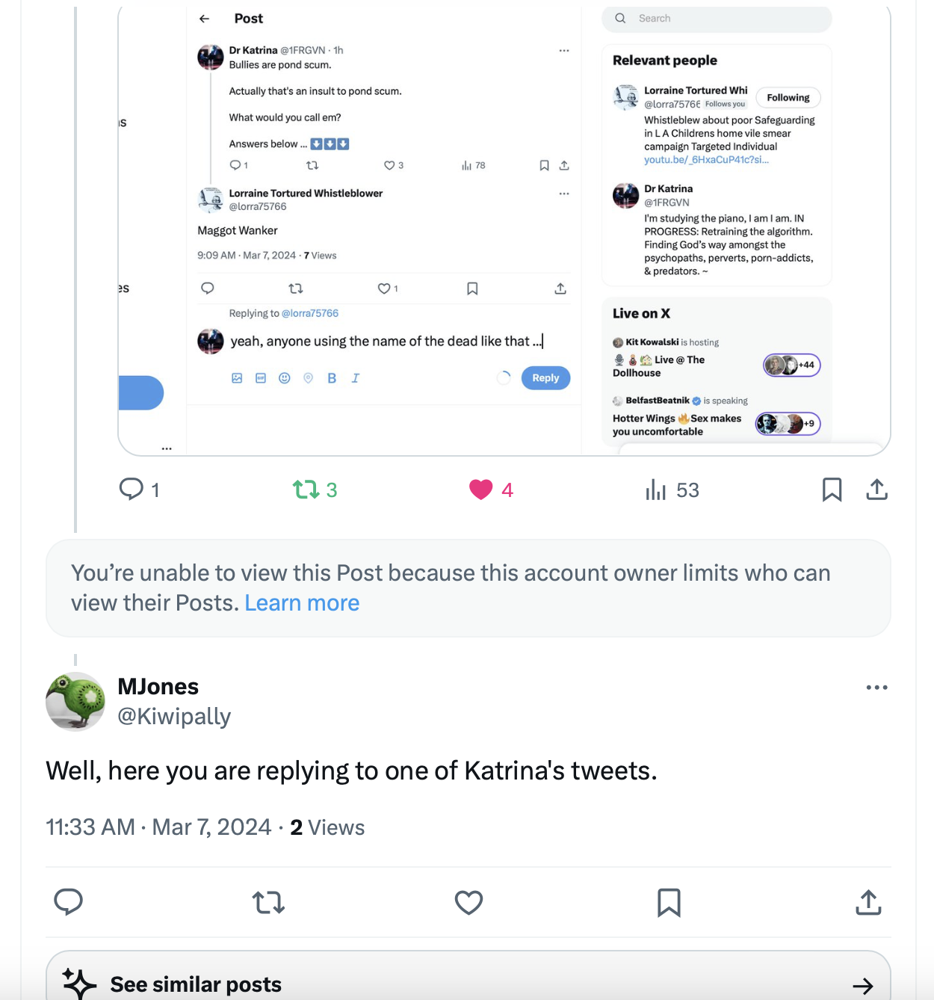
- This is the hidden tweet.
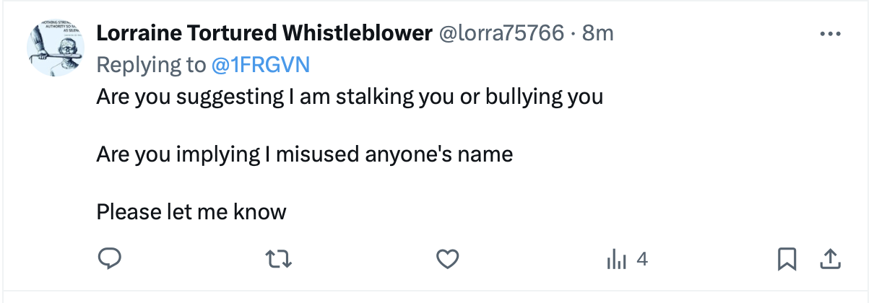
- The
@lorra75766account no longer exists.
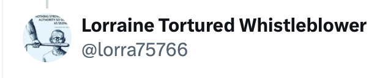
- At the time, I felt everyone at the conservatory were complicit in Lorraine’s death somehow, and I tweeted to that affect.
- I now believe this account was manned entirely by Hazel Smith, who must have been certain of my doom since I had been threatened so badly I would never return to the conservatory.
- She felt totally safe.
- Stalkers now knew that I was alone in my apartment with only my work colleagues at Polygon to interact with, some of whom were also complicit in whatever was going on for me at that time.
- The nature of the cyber-stalking, and the bold confessions from accounts like this one and others ongoing, which I will be detailing soon, makes me certain that the whole region expected me to be murdered, or die somehow, or disappear perhaps, or be maimed and/or become sick and never recover.
- And that no-one would be blamed for it but myself, and God maybe.
- What a story!
Threats of violence¶
- You cannot imagine the continuous online threats I was subjected to on X over this period.
- It was a bombardment of violent imagery and messaging, subtle and not so sublte, and of course nothing that could, on its own, be reported.
- In this section, I list a small sample of the threatening content I was seeing.
- Again, much of it from accounts that no longer exist.
- Here’s a particularly unpleasant example with imagery which will “pop up” yet again in July 2025 when the criminal gangs stalked and poisoned me during my trip to Lourdes - I wasn’t even using the X app on my phone then.

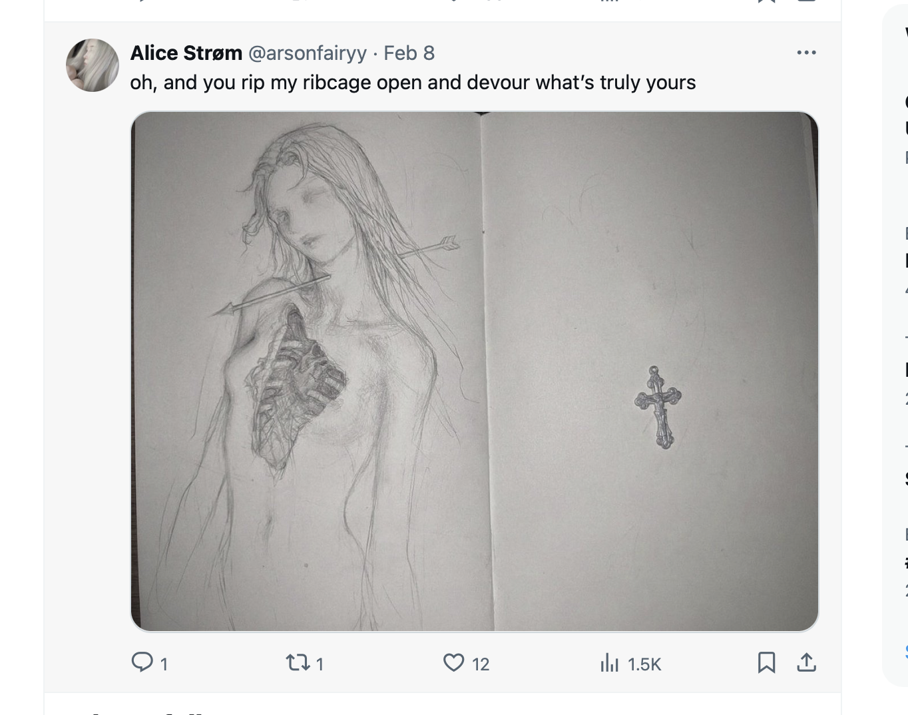

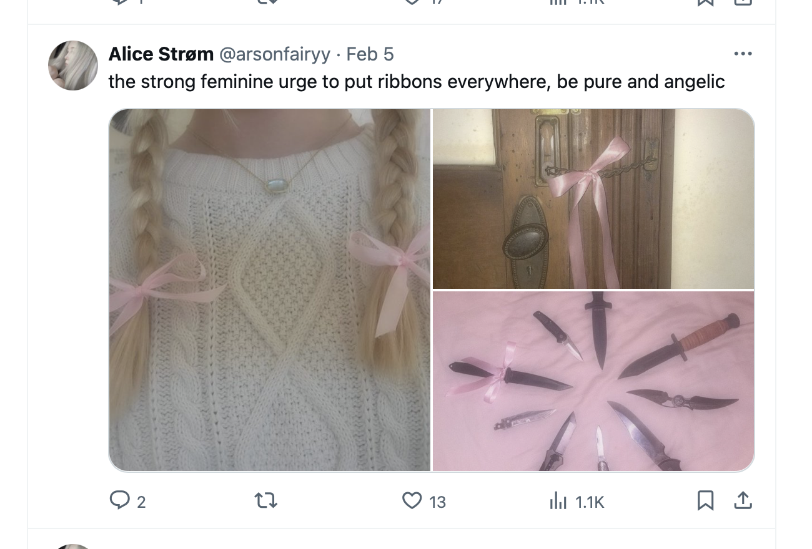


- Here’s a mention of stabbing, now deleted.
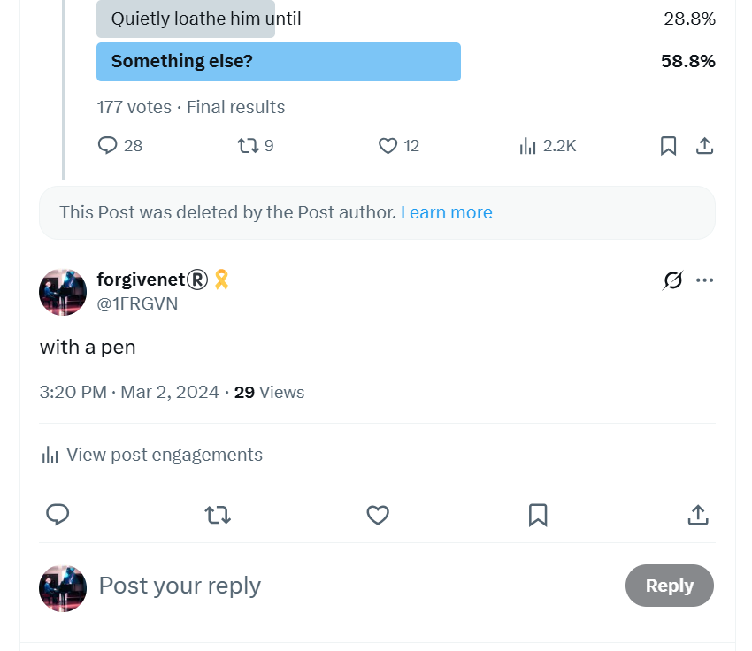
- Khadidjatu sounds like Ka did you too.
- Is that a direct reference to someone “do-ing” me?
- Africas is related to a song at choir and my personal life.
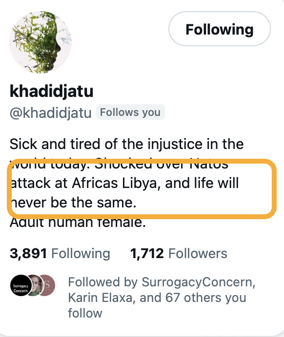
- A very threatening message below.
- The whole tweet conversation with this account was extremely threatening; even phosphorous poisoning was mentioned.
- I’m pretty certain the content coming from the
@hierencoreaccount was Sandra Smith. - I could practically hear her voice.
- Apparently, her ridiculous diatribe was supposed to be smart and funny, as well as threatening. It was only threatening.
- Here’s the top of her rant-graph.
- Our chats were so good, she even gets her own section below.
- I wondered if the account below was the technician guy at the conservatory, or the owner of the mobile phone shop.
- It was always active during intense threats and the English is very British-vernacular.
- The profile pic saying Ssh, be quiet, is another common theme.
- I expect it is probably Hazel putting on her normal.
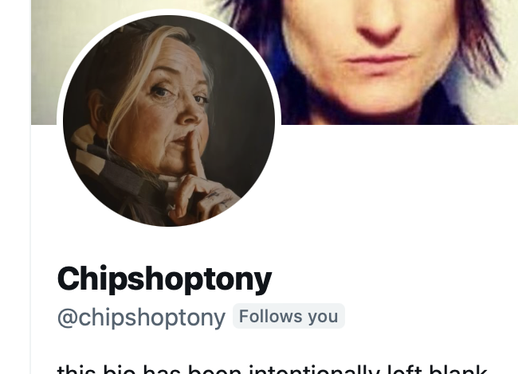
- Tyburski I took to mean they were going to tamper with my car; another common theme.
- The comment is derogatory of course; clowns being a common threat-meme.
- Note this profile pic looks like the nurse again with the very threatening message.

- Another stalker account message translates to: “TERF I live for revenge.”

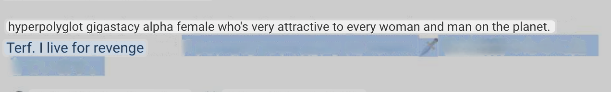
- It’s probably worth re-translating a lot of these messages because hackers were able to manipulate translation results into whatever they wanted.
- I just did that with the above pic and got a completely different message.
- Gone fission I took to refer to a conversation I had with Christine BJ at lunch where I was explaining how being stalked to this extent felt. This was back in probably November 2023 sometime.
- Things I said to people were often posted back to me on X like this; I assumed because someone was listening to everything I said via my hacked mobile.
- I had said that I believed the trumpet teacher was going to be the man I married, and that he was doing the if he likes you he treats you badly thing to nuclear fission levels.

@HierEncore49002¶
- An account called
@HierEncore49002converses with me on Twitter. - I’m certain its Sandra Smith, I can practically hear her voice.
- Peppered throughout the chat are threats and references to jail, drugs, my personal life, other stalkers and criminals, and poisoning.
- Here’s the search: https://x.com/search?q=%20%20(from%3AHEncore49002)%20(to%3A1frgvn)&src=typed_query&f=live and following are some examples.
- I’ve got to wonder who Amy is. The name rings a very strong alarm bell.
- I inform the account holder I’m on to them with the pothead reference alluding to Hazel. Note the reply.

- I must have had a sense of triangulation at this time; i.e. people who had my back who were also trapped in hell by the Smiths; cutting loose refers to this.
- The answer suggests they expect to go to jail together.
- The here and now statement refers to
@jctot19of course; the trumpet teacher I was in love with and believe loved me back (I had no idea there were at least four trumpet teachers). What to do!

- Interesting deleted reference.
- I remembered it was regarding the fact I had gone no contact with my family. Definitely something they would have wanted to delete.
- Note the quick revert back to jail imagery. I find this fascinating.

- I was definitely chatting with Sandra, but like the other delegated accounts, this one could be taken over at any moment and I believe Domingo and Carmen and other Spanish-speakers did so, frequently.
- Outside of when I was speaking with Sandra in extremely fluent and vernacular British English, suddenly the flow might stop and be broken by an obvious non-native speaker.
- You can probably see this in the conversations, if they haven’t deleted them.
My own posts¶
- Stalkers would have threatening statements I myself had posted historically, and then like or retweet them so they would pop up in my notifications like another threat.
- I liked to call them out on it when I could.
Spaces¶
- Quite often, I’d see X spaces set up with a whole bunch of familiar fake accounts attending.
- Interestingly, in the Lorraine Tortured Whistleblower pics, we see another account I believe was run by Hazel, or her Northern Ireland associates,
@BelfastBeatnikrunning a space.

- I’m curious about the Northern Ireland connection now, and the horrible experience I had in 2020 as I left my toxic environment in London and sought a new and better life, and seemed to be attacked by swarms of sinister people and events wherever I went from that moment onwards…
19th March¶
Changing my bankcard PIN numbers¶
- I’m really worried I’m going to be robbed.
- I order a new bank card but I won’t be able to use it until I get back to my apartment in Dénia in April.
- I decide to change the PIN numbers on my bank cards in Madrid.
- The process I have done a hundred times is unusually and extraordinarily difficult.
- It is as if I don’t have the mental capacity to perform this simple task.
- It takes me three or four trips to the ATM machine at the relevant banks to finally complete the task, a whole day for one card.
- For another card, I have to come back the next day to finish the task.
- I wonder what was impeding my cognitive ability at the time.
- Whatever it was, they continued to dose me up on it, and now I have trouble with many common tasks I used to do without issue.
- I have to wonder if teachers and staff at the conservatory and their criminal associates have given me a permanent brain injury.
- Certainly in November 2025 I am still unable to play chess - I was actually rather good at chess - and I have zero spatial awareness, something I never had a problem with pre-March 2024.
Drugs and poisons in my toiletries
- It took until December 2024 before I was certain that criminal gang members - certainly Carmen Cano but no doubt my neighbors at Carrer Furs and others - were entering my apartment while I wasn’t there to add substances to my toiletries.
- This meant they could continue to dose me up long term, even when I was away for long periods of time.
- Given I had been sufficiently terrorized into leaving my conservatory studies, they could safely begin the maiming with the intention of blinding at a minimum (so I could be more easily robbed I guess) and then eventually murder by some illness caused by constant poisoning like perhaps Vipassana Maria the Buddhist was experiencing; her doctors and the hospitals claiming there was no problem with the huge abdominal growth near her liver area.
- My suspicion is low-level methanol doses which affected my sight detrimentally (I now have a pre-glaucoma condition) but, worse, decimated my cognitive capacity.
- Not being able to do the most simple task of changing a PIN number on a bank card at an ATM machine was the first time I really noticed my cognitive skills in decline.
- Prior to March 2024, I was doing detailed and complicated mental tasks at work on a daily basis with no issue.
- From March 2024, my cognitive skills went into serious decline.
- I found out, alarmingly, I was unable to play chess anymore in May (at dinner in Bali with the Polygon Head of IT) and more obviously in September 2024 on Chess.com, and I had been a good player and was able to beat other good players my whole life.
- I can only assume some deadly substance was added to my toiletries which I continued to ingest while I was away.
- Another cognitive skill I have completely lost since March 2024 is my spatial awareness, which has been very strange for me as it was excellent prior to being attacked with the intention to maim and kill by criminal porn-gangs and honey-trappers.
- When I finally realized what was going on, and threw out all my toiletries in Bangkok in December 2024, my sight and health improved immediately; and then I knew for sure.
Chat with Jorge Tuesday 19th¶
- I’m still not clear about what to do about getting my devices analyzed for the police.
- We will make a decision on 21st March about who to go with.
WhatsApp with Jorge 19th March
[19/03/2024, 02:51:06] Niramisa Weiss: Is 22nd ok Jorge? [19/03/2024, 02:51:14] Niramisa Weiss: In the morning [19/03/2024, 03:14:24] Jorge Esclapez Deckcard23: Hi. Sorry but the people in the lab is on hollyday. I confirma you the wednesday at morning. My apologies. See you. [19/03/2024, 13:03:48] Niramisa Weiss: Ok thank you
Continuing threats¶
Mike Wenham¶
- Mike Wenham was my boss at my first ever programming job with British Telecom in 2010 in High Wycombe.
- It had been my sole ambition to be a software engineer and build systems and services to help make the world a better place.
- I had found it very hard to get a break into software development, even with a PhD in computer science, so I had done professional Java certifications in India in 2010, the same time I “bumped into” Jitendra Das.
- When I returned to the UK, I got a job pretty much immediately.
- Mike told me that my tech interview test had been the best anyone had ever done on it, and he also liked me so gave me the job.
- Mike had obviously asked the cleaning lady to interrogate me about my romantic life. It was as if he knew about Jitendra already but couldn’t come out with it himself or I’d know I’d been hacked, or worse that something more sinister was going on.
- I got on with Mike. However, he was a woman-hating psychopath and had already terrorized the one other woman at work so badly, she walked out about five months after I started.
- In our totally chaotic codebase, I’d often come across pieces of beautifully crafted, clear code. Mindy was always the author of them.
- The whole team sang ding dong the witch is dead the day after she walked out.
- Another man walked out the following day in support of her.
- I told Mike about my view on her code. He told me they had helped her with everything she did. I did not believe him.
- It was my first ever tech job, I was on probation, I didn’t know what to do.
- With Mindy gone, they turned on me immediately.
- It was horrible; rape jokes, porn on my screen.
- At my six-month review, Mike told me he didn’t know if I was any good, and I would have to write a list of everything I had done while I was there so he could think about whether I was good enough, or not.
- I went back to my desk, opened a text editor, and start to write the list.
- At that moment, I heard a voice.
- It said quietly: You don’t have to do that. So I didn’t.
- For the record, I very rarely hear voices, just a few times in my life. But they have always said really rather amazing and positive things.
- A few days after that I went away for Christmas. While I was away, detoxing in Samui, I realized I had no choice but to leave my job.
- I emailed Mike to tell him. He was really angry and sent a(n Irish) million emails trying to get me to stay; I want you to love your job, he said. I had.
- It was devastating.
- Anyway…
- Cut to March 2014, the first day of my service with Our Lady at Lourdes: Mike’s wife emails everyone to tell us Mike has murdered a woman and would we be able to help with character references for the police as everyone thought he’d gone temporarily insane.
- Turned out he had had a penis enlargement operation which had gone horribly wrong, and instead of gaining a huge penis, he lost a few inches of what he already had, and after that he had become obsessed with murdering a woman.
- All of this came out in court and was reported in the media, the Mirror mainly.
- Some of his colleagues took the stand to say what a good bloke he was.
- Mike was found guilty of murder, and imprisoned for life.
- I wrote about this on X when I was anonymous, in 2021:
- And again in 2022:
- In March 2024, having never mentioned Mike’s name, I am DM’ed by a fake account that has been lurking around for some weeks.
- They randomly ask me about him.

- I find the statement: From the perspective of someone who worked with him and unfortunately had to see him on a regular basis very interesting.
- I wonder, now, if Dénia criminals were indeed working with Mike, and, if so, how and for what purpose.
- I know from experience how everything they do online is about manipulation and controlling people’s minds.
- I wonder if they had been tasked to persuade him to undergo a genital enhancement operation that has 100% risk.
- I wonder if, at the same time, they thought they might use him for their porn-specials starring yours truly. Would murder have been the inevitable end there too?
- Did Mike film the murder of Karolina in 2014 and did he send it to his online accomplices who then uploaded it to dark-web porn networks?
- After I say trying to scare me are you? the account makes no more response.

- The
@blueskies19761account is a typical fake account used by stalkers, just a few messages and followers. - The message I read on the timeline was very triggering because I had just come across an account which looked to be my mother’s X account.


- My cousin Leah (also a target for honey-trappers) had found me somehow a while back (was she led to me by British criminals that control her?).
- I believe she told my mum I was on X and gave her my details.
- I saw my mother following me around that time, and thought it was just another stalker pretending to be her.
- I subsequently found out, in April when we communicated directly, that it really was her.
- The hackers were more sure of the truth than myself at that time!
- I interacted with mum on Twitter for a while but there were always technical problems.

- Anyway, the whole interaction with the
@blueskies19761account was extremely threatening. - Whoever was managing the account had done a fair bit of research on my X activity and background, or more likely knew me personally for a long time already.
- Again, the English is extremely vernacular so it has to be a native.
Was Mike Wenham planning on murdering me?
- Around two weeks before Mike Wenham murdered Karolina, he invited me out to drink ayahuasca, which I found rather strange, and I had refused.
- After Karolina was murdered, I remembered that while I was working for Mike in 2010, December time, he had also been doing part-time building in a house in Leslie Road just up from my road. He had insisted I come and see him at this house on a Saturday morning in mid-December 2010. I went.
- He had plastic all over the floors. It was a top floor maisonette and I was climbing the stairs. I noticed he had a stanley knife in his hand. Something didn’t feel right and I left.
- He urged me to come up but I said I didn’t have time.
- I didn’t think about it again until after the murder.
- The similarities were extraordinary.
- Was all of his murderousness egged on via online manipulation and fake communications?
- I have to surmise that this account was run by Hazel and Sandra Smith, or their British honey-trapping gang counterparts.
20th March¶
I tell my manager at Polygon what’s going on¶
- I tell David Schwarz, my manager at Polygon Labs, that I’m being hacked and harassed by people from Dénia.
- I explain I have had to leave my conservatory studies because of threats to my life.
- He seems like he is listening, a little bit at least.
- He shows concern and tells me to keep him informed.
- He never mentions the matter again.
- I have now told my whole team, Gabriel Silva, the Security Department, and David Schwarz about the serious abuse I have been suffering.
An account I believe is run by Domingo Cano the piano teacher¶
- The account
@AllyBriskethad always seemed suspicious to me. - Samuel from harmony class back in May 2023 when the cyber-stalking really got going may have signalled this account to me during our weird chat on the way up to the tunnel one evening when it looked like he was taking direct instructions off WhatsApp about what to say to me.
- I guessed at that time that Domingo had instructed him to make the hint, so my suspicions about this account started there.
- Yes, homo reads like an answer to my realization, which I made public on X in the summer of 2023, that Domingo is gay.
- In response to this, I received confirmations back from stalkers’ fake accounts that yes, indeed, Domingo is gay, and that he had even confessed it to Mercedes at one point.
- At the close of March 2024, I’m so stressed that I start communicating with accounts directly as if they are who I they think they are.
- Note the ratio of people who have translated this tweet. (I think they probably did this on purpose at this stage to wind me up.)
- The message summary on the left is interesting too.
- Anna; lovi, Yes, homo, and Skylar Gwynn are accounts I believe were stalking me and so likely run by the same person or persons.
- Did they manipulate my feed to make
@AllyBrisketlook like it was Domingo? - Something made me very certain it was him since May 2023, and intensely so during those stressed days in March 2024. Perhaps I made a mistake.
- The truth will certainly be coming out in the rinse.
- I wonder if the fake account use punctuation and symbols in their names for technical reasons their online personas would likely not be aware of.
- A flurry of concerned stalker accounts sending me messages says more about mass gender-violence techniques than anything else.
- I’m sure there’s heaps more of these.
- From March onwards I was bombarded with DM requests from fake accounts.
- Notice the
@belfastbeatnikaccount running a space again. Quite often this account would pair up with an account called Towel, or something like that, in Spaces. - Whenever I saw these two together, I would report the Space for child endangerment.
- I’ll have a good look at the DM list at some point.
Chat with Jorge Wednesday 20th¶
WhatsApp with Jorge 20th March
[20/03/2024, 17:01:27] Jorge Esclapez Deckcard23: Hello. I´m waitting an answer. At 14:00 the lab tell me if the Friday could serve you. [20/03/2024, 17:06:30] Niramisa Weiss: Ok thx [20/03/2024, 17:42:50] Niramisa Weiss: Hi Jorge sorry for inconvenience, I have found someone in Switzerland who will do a full and complete check so I just sent it to them via courier [20/03/2024, 17:43:16] Niramisa Weiss: We could check the Linux box instead? [20/03/2024, 17:43:43] Niramisa Weiss: This is where they accessed my video and took videos of me which were very private [20/03/2024, 17:44:33] Niramisa Weiss: However I have reformatted a few times since then and removed the manjaro os completely so I’m not sure what you think about that? [20/03/2024, 17:47:39] Jorge Esclapez Deckcard23: I don´t understand that question. Linux box? [20/03/2024, 17:49:04] Niramisa Weiss: My ASUS laptop on which I was running Manjaro when they had access to the camera [20/03/2024, 17:56:58] Jorge Esclapez Deckcard23: Lets see if I understand. The MAC computer at some point had an installation of the Manjaro distribution. Was this distribution running at the same time as the MAC one? Did you have it as a virtual machine? Or did you format the MAC and install this version of Linux? [20/03/2024, 18:00:02] Niramisa Weiss: I started to use the Mac when I realised the ASUS was hacked. [20/03/2024, 18:00:28] Niramisa Weiss: I had been using the ASUS for ages with a manjaro/windows install [20/03/2024, 18:00:34] Niramisa Weiss: Partitions [20/03/2024, 18:01:17] Niramisa Weiss: Last August they took control of my keyboard and at that moment I knew I’d been hacked 100% [20/03/2024, 18:01:43] Niramisa Weiss: So I stopped using it and used the Mac instead which I hadn’t used for ages and was already reformatted [20/03/2024, 18:01:56] Niramisa Weiss: They got into the Mac pretty quickly [20/03/2024, 18:02:54] Niramisa Weiss: But the ASUS is where the videos were taken and since then I have blocked all my cameras except the phones [20/03/2024, 18:03:30] Niramisa Weiss: However I removed the Manjaro OS although the boot record is there still [20/03/2024, 18:03:37] Jorge Esclapez Deckcard23: So the ASUS computer has evidence of the hack if it has not been formatted. If it has been formatted, it depends on the type of formatting, whether or not information can be recovered. Also the type of hard drive. If the hard drive is SSD and is not mechanical, nothing can be recovered. [20/03/2024, 18:04:14] Niramisa Weiss: I reformatted it [20/03/2024, 18:04:39] Niramisa Weiss: Is SSD same for Mac too? [20/03/2024, 18:39:45] Niramisa Weiss: Ok I think some boot records remain [20/03/2024, 18:39:53] Niramisa Weiss: From before [20/03/2024, 18:40:09] Niramisa Weiss: But if you think it’s not possible that’s ok [20/03/2024, 18:51:47] Niramisa Weiss: I can send you some logs and you can have a think about it if you like? [20/03/2024, 19:03:33] Jorge Esclapez Deckcard23: SSD is a kind of hard disc. [20/03/2024, 19:06:22] Niramisa Weiss: Yes I know.. so it’s true for Mac also [20/03/2024, 19:06:53] Niramisa Weiss: Once reformatted no possibility of proof, even though they still have access [20/03/2024, 19:06:58] Niramisa Weiss: 😔 [20/03/2024, 19:07:07] Niramisa Weiss: They are quite sophisticated
21st March¶
Chat with Jorge Thursday 21st¶
WhatsApp with Jorge 21st March
[21/03/2024, 17:09:53] Jorge Esclapez Deckcard23: Hi. Tomorrow when you want in San Joan D´Alacant, Juan Sebastian Elcano, 24 Street. [21/03/2024, 17:10:10] Jorge Esclapez Deckcard23: I am waitting you. [21/03/2024, 17:10:37] Jorge Esclapez Deckcard23: Sorry but yesterday Javier was very busy with several cases. [21/03/2024, 17:12:25] Niramisa Weiss: Hi so tomorrow what time? [21/03/2024, 17:12:38] Niramisa Weiss: And which depositivo? [21/03/2024, 17:25:51] Niramisa Weiss: The ASUS? [21/03/2024, 17:26:01] Niramisa Weiss: Zenbook 13 [21/03/2024, 17:26:51] Jorge Esclapez Deckcard23: both. And after speak with Javier we will decided the best option. [21/03/2024, 17:27:31] Niramisa Weiss: Ok what time? [21/03/2024, 17:27:44] Niramisa Weiss: I need to be back at 3 [21/03/2024, 17:28:24] Jorge Esclapez Deckcard23: I will start to work at 9:30 [21/03/2024, 17:28:45] Jorge Esclapez Deckcard23: When you want. [21/03/2024, 17:28:50] Niramisa Weiss: Ok I can be with you at 9.30 [21/03/2024, 17:29:15] Niramisa Weiss: I will bring the ASUS Zenbook 13 [21/03/2024, 17:29:31] Niramisa Weiss: I reformatted my MacBook and I don’t have the phone [21/03/2024, 17:29:55] Niramisa Weiss: I believe they got back into my iPhone even tho I reformatted it too [21/03/2024, 17:39:08] Niramisa Weiss: Aqui? https://maps.app.goo.gl/kkKTifiGY7Py6QQ26?g_st=iw [21/03/2024, 17:58:28] Jorge Esclapez Deckcard23: Yes, here is the office and the forensic lab. See you tomorrow. [21/03/2024, 17:59:13] Jorge Esclapez Deckcard23: Well, i speak english well with writting but my listening is awful. But don´t worries I have google translator. 😀 [21/03/2024, 17:59:37] Niramisa Weiss: My Spanish is awful in exactly the same way sorry 😔 [21/03/2024, 17:59:49] Niramisa Weiss: We will manage [21/03/2024, 17:59:55] Niramisa Weiss: â˜ºï¸ [21/03/2024, 22:05:40] Niramisa Weiss: Hola Jorge lo siento mucho pero por razones inevitables tengo k cancelar de manyana [21/03/2024, 22:06:26] Niramisa Weiss: Posiblemente podriamos vernos en abril, te dire [21/03/2024, 22:18:12] Jorge Esclapez Deckcard23: ðŸ‘
- After visiting my friend and preparing the letter for the other expert in Alicante, I cancel the appointment with Jorge.
- I will give neither of these experts the hacked MacBook, iPhone, or new Android I’m currently using, the Android phone I sent to London, or the security cams with abusive hacked activity from March 2024.
24th March¶
Valencia¶
- I return to Valencia on the 24th March and stay in the Barcelo in the centre of town from 24th-27th, and then the Holiday Inn Express near the airport from 27th-29th March.
- I have a flight scheduled from Valencia to India on 29th March returning on Saturday 6th April so I had to leave Madrid and return to Valencia.
- In Valencia I feel like I am being constantly watched and followed, that people know who I am, even in the Corte Ingles.
- Everywhere I go, and everything that happens has an air of extreme unfriendliness and threat.
- I did not have the intensity of this experience in Madrid, although I certainly felt I was being stalked there too.
- I wonder if whatever they put in my toiletries before I left for Madrid - they knew I was going and when I was out of my apartment - made me very paranoid as well as stressed and unable to perform simple tasks efficiently.
- Twitter harassment was fever-pitched while I was in Valencia.
- I do believe there are vast woman-hating networks in the region, indeed in the whole of Spain, which can be relied upon to inflict extra terror on a target whenever necessary.
Management team meeting at Polygon¶
- I’m scheduled to attend the Polygon management team meeting.
- I log in from my hotel room at the Holiday Inn Exress near Valencia airport.
- I am clearly disheveled and stressed. I probably sound nervous and disorganized.
- These videos were always saved by the business.
- I wonder now if the porn-subscribers, perhaps including men I was working with, linked into the live video footage of all my work meetings - especially the ones which Hans sabotaged in an outrageous manner - and maybe even the piano concerts as well as spy-cam footage from my apartment.
- They must have loved it.
- No wonder I’m infamous.
- The unwitting porn-star that everyone loathed.
29th March¶
- I ask X if I should go back to study at the conservatory when term starts again.
- I’m guessing this sort of post meant that the gangs had to step up the terror.
- In April, when I return from India, I find myself in another state of terror; convinced, yet again, I’m about to be arrested.
31st March¶
Letter to the Guardia Civil¶
-
I’m finally able to write to the Guardia Civil from my hotel room in Mumbai.

Letter to the Guardia Civil
Please forward to: El Grupo de Delitos Telemáticos (GDT) Unidad Central Operativa de la Guardia Civil C/ SALINAS DEL ROSIO, 33 28042 MADRID SPAIN Dear sirs, I am reporting an organized crime gang in Dénia, Alicante who are terrorizing the townsfolk by singling out people to target for intimidation and abuse and possibly financial crime too. I have experienced gender violence from them, including cyber bullying, and they have hacked into my computers and phones and webcams too. I have evidence for this on my laptop, phone, and webcams, but the I am in the position where I have to gather it myself, including pay high prices for tech analysis. When the gang tried to chase me away from Dénia in June last year, I refused to flee and the intimidation got worse. They made it very clear to me they had access to my technology in August 2023 and as I am an IT professional myself, and the attack was so professional, I assumed they must have paid someone to hack me. I did not realize at the time they had been quietly watching me for over a year already, maybe more. I understand that the police have little interest in pursuing such intimidation cases, as historically it is impossible to gather evidence against gangs like this who target women, and the townsfolk are too scared to talk. However, this particular gang in Dénia Alicante has recently become technologically advanced, and they are now pursing their victims via social media. They are also hacking their victims’ home networks and phones, initially by entering through vulnerable routers from handheld devices outside, or maybe even through friends working at the IPs, and thereby gaining full access to people’s online activity. Their victims appear to be no longer just women either. Gathering evidence for this organized criminal activity should be easy, and should not be left to a single victim who dares speak up. I have been to the police twice now about the bullying. Dénia police sent me away and did not record my visit after a violent threat on Twitter. Madrid police took a statement but will not be investigating. I have to take my laptop and phone to a perito for a professional analysis which will cost me upwards of EUR 1000 at which point I will amplify my complaint. This gang has targeted me probably since at least June 2022 when I moved back to Dénia and signed up for piano study at the conservatory again, and by doing so insulted the piano teacher Domingo Lopez Cano who threatened to poison me for refusing his advances in 2014. Extremely private photos, videos, and recordings of me have been disseminated throughout the town, and people I don’t know either laugh at me when they see me, or look away uneasily. They have suggested online that they are also behind recent suicides in the town, of which, in recent times, there are far too many for such a small area, and one of these includes an old friend of mine Lorraine Blackbourn who was apparently terrorized by macho male violence which led her to kill herself. I have been very clear with people that I will never kill myself so if anything happens to me it is suspicious. These people are out of control now and something needs to be done. It should be easy to gather online evidence from this gang once you have ascertained who the technology advanced members of it are. I expect a quick scan of databases should help. The people I am aware of are: Domingo Lopez Cano and his sister Carmen, their family and associates -> who appear to be well-known criminals in the area. Vidal Sastre Sanchez Hornero and his associates. The technician at the conservatory David. They have implicated many more (teachers, staff, and students) at the conservatory by being bold enough to share extremely private health information with them about me that I have told no one at all, only Google. Everyone knows everything about me, including how much I am paid, who I make donations to, how much those donations are, and when I make them. No-one should know these things. I have been unable to access my Coinbase account are(sic should be “after”) an extremely horrible attack by the conservatory and the people of Dénia a few weeks ago. I believe they have access. I have over 70K EUR in there that they may have access to. I am trying to get access again. As I said, it was clear by the fact that everyone knows what is happening to me and is either enjoying it or unable to reach out to help me, that this is a sadly common event in Dénia, and perhaps further afield too. However, this gang are now totally out of control, and need to be stopped, I am in the process of contacting the Europol criminal cyber gang investigators. I enclose some information; the denunciation I made in Madrid, and the amplification I will be making once I get some evidence from my laptop. I have numerous letters I wrote to the Generalitat which catalog my experiences and complain about the treatment coming from one of a macho teacher and my concerns about his closeness with young girls and the access he has to their phones. These letters were totally ignored and sending them put me in more danger at the conservatory and in the streets of Dénia. I won’t stop trying to do the right thing. You have to help me stop technology-advanced misogynist gangs terrorizing the good people of Spain and forcing victims to flee from our homes in fear of our lives. Faithfully, Dra Katharine Murphy Doctorado en informatica UPM 2009 +34-622-900-327 Carrer Furs 15, B1, Esc2, Piso3, Pta17 03700 Dénia, Alicante
- I print and send it registered from India.
- I don’t know if anyone received it.
Cowards hiding behind the women¶
- The women in this sick history are as evil as the men.
- What’s unsurprising is how the men remain hidden, in the backgrounds, while the women do all the dirty work out in front; sometimes with great pride and arrogance too.
- The women know that if they complain they might end up in cherry-pie porn, something that that they probably did to the lovely laundry lady, Maria.
- Did she have a rare good word to say about me?
- Do they all end up a little crazy in an environment like this?
- Eventually, the women will be forced to take the blame when it all goes tits-up, which is inevitable of course.
- But we will know better.
- Even so, I expect that the burgeoning Dénia porn industry is a big employer these days; girls with parents in the know getting jobs as make-up artists, set designers, poisoners, rape victim shepherdesses, and similar, while their parents pray fervently that their daughters will not be targeted, but I guess even they become a coward’s worthy challenge; perhaps especially so once they get bored with the foreign women.
- No-one wants to lose their livelihoods, or their Ferraris.

Online stalkers¶
@january_myth¶
Taru Ann¶
- The following information supports my suspicion that enormous communities of occultists are involved in targeting women and children online for criminal porn-gangs internationally.
- I believe my personal experience of this insidious manipulation is just a small task on a massive todo list for these (I expect mostly) women (the men are busy with the sedating and raping and filming, right?).

- The account posted the Yeats poem above at the exact moment I went into meltdown on 29th August 2023 and became certain I was going to be arrested.
- I don’t remember seeing it at that time as I was disintegrating.
- I hadn’t yet twigged that the
@january_mythaccount was involved in the conspiracy, so even if I did see the tweet, it would have made no impact. - These posts were used to drag me back into the lie, as it were, even when it was obvious to me that I was in grave danger.
- The account, named Taru Ann, meaning Legend Ann in Finnish, seems completely legitimate. It has masses of followers and appears to be well-known in the online gender-critical community.
- The collocations legend Ann and January myth together are significant and suggestive of the evening the good-looking trumpet teacher first turned up for class just as I was drugged, and he and Ana Requena did their little act together outside the toilet, thus creating the love-triangle myth.
- “Legend Ann” seems to be a direct and sly reference to honey-trap situations involving Ana Requena; violin teacher from the conservatory implicated in numerous honey-traps such as Natalia, Julia Lohmann, etc.
- Is Ana Requena a known legend in the honey-trap world?
- I found the pictures she posted very fake-account in style and content; grainy and twee interior scenes.
- Interestingly, So (Janet), my general election campaign volunteer, would post some just like them in November 2024 while suggesting I come and stay with her at her home!
- So (Janet) even more interestingly traveled to Avignon to be at the Pelicot trial.
- I wonder if places where multiple sex-abuse victims (perfect online-manipulation fodder) might go is also well attended by online porn-gang researchers?
- Some of the
@january_mythaccount’s more personal themes didn’t ring true to me at all. - At one point, she posted repeatedly about needing to buy an expensive tombstone for her sister, and I did wonder if she was building up to asking everyone for money.
- It turns out, the Taru Ann account had already posted a meaningful poem on the night of 12th June 2023.
- I remembered this when she retweeted the picture from it, without the poem.
- I went looking for the original tweet from 12th June 2023.
- I discovered, with some curiosity, that it had been deleted.
- I asked about it.
- She posts the correct pic eventually, and I ask her about the poem.

- I remembered it from the evening 12th June 2023 because of the poem alone. This was an evening in which I was in a significantly traumatized state, and not just from ridiculous bullying at the conservatory either.
- On 25th March 2024, Psalm Sunday and an evening I post a lot about the Light, the account holder retweets the post from 29th August 2023, and I reply.
- It as if she’s annoyed I’m not getting it, and she needs me to know she’s involved.
- Was the Light also annoying?
- Eventually I begin to suspect that whoever is managing the Taru Ann account could be well known to me.
- I wonder if it is Ana Requena, due to the namings.
- On 22nd September 2024, after weird communication from Trish Penny all summer, I wonder if Taru Ann is Trish, at least from time-to-time by delegation.
- Liking my question, Trish?, seems like a confirmation.
- I remembered that during one particular series of personal tweets in 2022 in which the Taru Ann character had fallen and broken her wrist, Trish Penny had a broken wrist at the same time.
- Do the surrounding and supporting social media accounts slowly reveal themselves to a target the closer (they believe) the target is to giving in to the gangs?
- On Friday 29th November 2024, this account deleted a tweet reply I had made.
- It felt like she was calling out the fact that she deletes tweets from time to time - to explain deleting the significant poem from 12th June 2023.
- The purpose behind accounts like these I can only assume is in support of criminal gangs.
- What’s terrifying is that there are 1000s of them in any particular graph, all connected, and all in support of each other. One wonders if they have a Slack to keep contact while they work.
- It makes me realize that when you send your kids onto social media, it’s literally like sending them all alone and naked into a sex club.
- Curiously, this account posted the pic I mention in the first timeline entry that reminded me of a weird event from so long before.

- Yet another breadcrumb on the road to giving into the gangs?
- Or a massive error on the part of a nation of sex-and-violence-obsessed criminals?
- The last post I saw from her before I muted and blocked her had a picture of the sister who looked very much like a Pan Am stewardess. She has since deleted it.
- Another account run by same support collective:
@this_is_peebs.
My @JackChardwood account¶
- Content for this period is mostly related to romance and relationship, i.e. keeping the lie going.
- Here’s a link to the search results for March 2024.